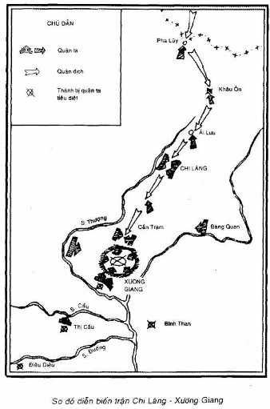
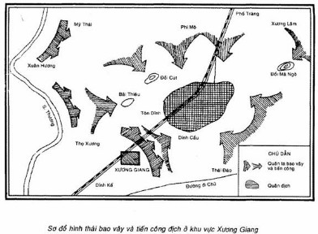

NGÀY 8 THÁNG 10 ĐẾN NGÀY 3 THÁNG 11 NĂM 1427
Đánh trận đầu, sạch sanh kình ngạc,
Đánh trận nữa, tan tác chim muôn.
Lỗ kiến xoi, đê vỡ phá tung,
Gió thổi mạnh, lá khô trút sạch.
NGUYỄN TRÃI
Bình Ngô đại cáo
Đó là khí thế xung trận vang dậy của quân dân ta và thắng lợi oanh liệt, triệt để của trận Chi Lăng – Xương Giang mà Nguyễn Trãi đã ghi lại trong Bình Ngô đại cáo. Đó cũng là chiến thắng có ý nghĩa quyết định, kết thúc thắng lợi cuộc chiến tranh giải phóng do Lê Lợi - Nguyễn Trãi lãnh đạo hồi đầu thế kỷ XV.
*
***
Sau chiến thắng Tốt Động - Chúc Động, quân địch phải chuyển hẳn sang thế phòng ngự bị động còn quân dân ta thì hoàn toàn giành quyền chủ động thế tiến công trên các chiến trường toàn quốc.
Trước tình hình đó, Vương Thông một mặt âm mưu giảng hòa lập kế hoãn binh; mặt khác vội vã phái người về nước cầu cứu. Ngày 31-1-1427 (tức ngày 26 tháng chạp năm Bính Ngọ), nhà Minh lại lần nữa quyết định điều quân tiếp viện cho Vương Thông.
Lúc lượng viễn chinh này chia làm hai đạo quân cùng kéo sang nước ta:
Đạo thứ nhất do thái tử thái bảo An Viễn hầu Liễu Thăng làm tổng binh, Bảo Định bá Vương Minh làm tá phó tổng binh, đô đốc Thôi Tụ làm hữu tham tướng, tiến theo đường Quảng Tây.
Đạo thứ hai do thái phó Kiềm Quốc công Mộc Thạnh làm tổng binh, Hưng An bá Từ Hanh làm tả phó tổng binh, Tân Ninh bá Đàm Trung làm hữu phó tổng binh, tiến theo đường Vân Nam.
Đạo viện binh của Liễu Thăng điều động quân các vệ Bắc Kinh, Nam Kinh, ty lưu thủ Trung Đô, hộ vệ Vũ Xương, các đô ty Hồ Quảng, Phúc Kiến, Triết Giang và các vệ nam Trực Lệ. Cùng đi theo với đạo quân này, nhà Minh còn phái những quan lại cao cấp rất am hiểu tình hình nước ta như công bộ thượng thư Hoàng Phúc, thái tứ thái bảo binh bộ thượng thư Lý Khánh làm tham tán quân vụ. Chúng còn điều thêm tên Việt gian hữu bố chính sứ Nguyễn Đức Huân giúp việc.
Đạo viện binh do Mộc Thạnh chỉ huy điều động quân từ các vệ Thành Đô, các đô ty Tứ Xuyên, Vân Nam.
Cả hai đạo viện binh đó lúc đầu gồm 7 vạn quân. Tháng 4 năm 1427, nhà Minh điều động thêm 1.000 quân ở các hộ vệ Vũ Xương, 1.200 quân ở hộ vệ Thành Đô, 1 vạn quân tinh nhuệ ở vệ Nam Kinh, 33.000 quân từ ty lưu thủ Trung Đô, các đô ty Phúc Kiến, Quảng Đông, Hồ Quảng, Triết Giang, Hà Nam, Sơn Đông. Tất cả trên 45.200 quân tăng cường thêm cho hai đạo viện binh Liễu Thăng, Mộc Thạnh (Những con số trên đây lấy trong Hoàng Minh thực lục được trích dẫn trong An Nam sử nghiên cứu của Yamamoto Tatsuro Tokyo 1950, q.l, tr. 721-722).
Như vậy, tổng số quân chính quy bao gồm bộ binh và kỵ binh tinh nhuệ điều động hầu khắp các tỉnh từ Sơn Đông xuống Quảng Tây, từ Quảng Đông sang Tứ Xuyên của nhà Minh tăng viện cho cuộc chiến tranh xâm lược nước ta lần này tối thiểu cũng đến 115.000 tên. Đó là quân chủ lực được chọn lọc, chưa kể số dân phu chuyển vận lương thực, vũ khí và số thổ binh ở Quảng Đông, Quảng Tây. Nhà Minh sai hình bộ thượng thư Phàn Kính đến Quảng Tây và phó đô ngự sử Hồ Dị đến Quảng Đông đôn đốc việc vận chuyển quân lương.
Theo sử cũ nước ta, đạo quân của Liễu Thăng gồm 10 vạn quân và 2 vạn ngựa; đạo quân của Mộc Thạnh gồm 5 vạn quân và 1 vạn ngựa (Đại Việt sử ký toàn thư, bản dịch đã dẫn, t. III, tr. 43). Tổng số hai đạo quân lên đến 15 vạn. Có lẽ đó là số quân chiến đấu bao gồm quân chính quy và thổ binh mà chưa tính hết số dân phu. Theo Lam Sơn thực lục thì tồng số quân địch là 20 vạn quân. Con số này có lẽ bao gồm cả quân chiến đấu và dân phu.
Những tướng cầm đầu hai đạo quân địch đều đã tham gia cuộc chiến tranh xâm lược nước ta trước đây, hoặc là quan chức lâu năm trong chính quyền đô hộ.
Liễu Thăng vốn là tùy tướng của Trương Phụ - kẻ cầm đầu dạo quân xâm lược nước ta năm 1406. Bấy giờ, Liễu Thăng đã đóng quân ở cửa Hàm Tử (Khoái Châu, Hưng Yên) và đem quân đuổi theo Hồ Quý Ly đến cửa biển Kỳ La (Cẩm Xuyên, Hà Tĩnh).
Mộc Thạnh, từ năm 1406 đã giữ chức tả phó tổng binh trong đạo quân Trương Phụ. Mộc Thạnh đã chỉ huy trận đánh chiếm thành Đa Bang (Ba Vì, Hà Tây) và đã từng bị nghĩa quân Trần Ngỗi đánh bại ở trận Bô Cô (trên bờ sông Đáy, Ý Yên, Nam Hà) năm 1408.
Hoàng Phúc, năm 1406 cũng theo Trương Phụ làm đốc biện quân lương. Khi nhà Minh đặt ách thống trị lên nước ta, Hoàng Phúc kiêm giữ hai chức bố chánh và án sát, tổ chức trấn áp phong trào yêu nước của nhân dân ta, thực hiện chính sách bóc lột vơ vét của cải và đồng hóa ráo riết. Hắn nắm vững địa hình, hiểu biết tường tận tình hình nước ta. Hai mươi năm nhà Minh thống trị đất nước ta thì Hoàng Phúc đã ở đây đến 18 năm (Minh sử, liệt truyện, truyện Hoàng Phúc).
Việc điều động viện binh lần này với số quân chiến đấu 15 vạn và những tướng dày kinh nghiệm, am hiểu tình hình và quen thuộc chiến trường nước ta, chứng tỏ nhà Minh vẫn giữ quyết tâm xâm lược, dùng bạo lực hòng tiêu diệt phong trào yêu nước của nhân dân ta, lập lại nền thống trị của chúng. Để thực hiện âm mưu đó, chúng phải vượt qua nhiều khó khăn.
Minh Tuyên Tông (1426 - 1436) khi lên ngôi đã phải gánh những hậu quả tàn hại sau cuộc chiến tranh to lớn với phong kiến Mông Cổ mấy năm trước. Mâu thuẫn giữa các dân tộc thiểu số với triều đình vẫn còn gay gắt. Biên thùy phía Bắc và phía Tây của nhà Minh vẫn thường bị uy hiếp. Phong trào đấu tranh của các dân tộc thiểu số, nhất là nghĩa quân "áo đỏ" ở vùng Vân Nam đã bùng lên khá mạnh. Nông dân khởi nghĩa do Đường Trại Nhi lãnh đạo khởi phát từ năm 1420 cũng gây nhiều khó khăn cho triều đình. Tình hình trên được Nguyễn Trãi vạch rõ trong thư gửi Vương Thông: “Huống chi ở nước các ngươi, quốc chúa liền năm tử táng, cốt nhục tàn hại lẫn nhau, Bắc khấu xâm lăng, đại thần lấn át; gia dĩ lúa má mất luôn, thổ mộc làm mãi, chính lệnh hà khắc, giặc cướp như ong. Từ niên hiệu Hồng Vũ đến nay, cùng binh độc rũ, trong nước tổn hao, nhân dân mệt nhọc. Trời làm táng vọng, chính ở lúc này” (Nguyễn Trãi, Toàn tập, sách đã dẫn, tr. 123). Do đó, đầu năm 1427 nhà Minh ra lệnh điều động viện binh mà đến chín tháng sau, quân tiếp viện mới đến biên giới. Những khó khăn về đối nội, đối ngoại, nhất là phong trào đấu tranh của nhân dân Trung Quốc đã có tác dụng cản trở việc diều quân, bắt phu, cung cấp lương thực để tiếp tục chiến tranh của nhà Minh và về khách quan, có lợi cho cuộc đấu tranh cứu nước của dân tộc ta.
Tuy nhiên nhìn chung, đầu thế kỷ XV vẫn là thời thịnh đạt của triều Minh. Đó là một đế chế lớn mạnh nhất phương Đông hồi ấy. Vì vậy, dù có một số khó khăn, nhà Minh vẫn quyết tâm điều động viện binh, tiếp tục những cố gắng chiến tranh lớn nhất. Khi các đạo quân viễn chinh của Liễu Thăng - Mộc Thạnh chưa sang, nhà Minh đã sai tổng binh Quảng Tây là Trấn Viễn hầu Cố Hưng Tổ đem quân sang ứng viện cho Vương Thông trước.
Đại quân Liễu Thăng - Mộc Thạnh sang tiếp viện lần này có thể làm cho so sánh lực lượng ta, địch thay đổi. Trên 15 vạn quân hợp với số quân hơn 10 vạn ở Đông Quan và các thành khác khiến cho số lượng quân địch tăng lên gấp bội. Nhiệm vụ của viện binh là trước hết giải vây cho thành Đông Quan, rồi sau đó phối hợp với Vương Thông tổ chức phản công mong xoay chuyền lại cục diện chiến tranh.
Về lực lượng nghĩa quân, không có tài liệu nào ghi chép số quân cụ thề. Trong các bức thư của Nguyễn Trãi gửi Vương Thông, số nghĩa binh tổng cộng đến 45 vạn (Nguyễn Trãi, Toàn tập, phần Quân trung từ mệnh tập, thư số 37, tr. 122). Đó là con số mà Nguyễn Trãi tuyên bố trong bức thư dụ hàng nhằm uy hiếp tinh thần địch. Thực tế lực lượng nghĩa quân không nhiều đến thế. Việt sử thông giám cương mục ghi chép số nghĩa quân có khoảng 35 vạn. Con số đó có lẽ bao gồm cả nghĩa quân và những đội dân binh, lực lượng vũ trang của nhân dân các làng xã.
Điều chắc chắn là lực lượng nghĩa quân bấy giờ đã trưởng thành đến mức độ giành được quyền chủ động trên toàn bộ chiến trường, ghìm chặt quân Vương Thông, giam chân chúng trong các thành, nhưng sức ta vẫn chưa đủ đề tiêu diệt nhanh chóng bọn bại quân này được. Giữa lúc đó viện binh giặc lại sang. Cùng một lúc, nghĩa quân Lam Sơn phải đối phó với ba khối quân địch:
- Đạo quân Vương Thông ở Đông Quan.
- Đạo viện binh chủ lực lớn nhất từ Quảng Tây tiến xuống.
- Đạo viện binh chủ lực từ Vân Nam tiến vào.
Một cục diện mới sẽ diễn ra trong phạm vi rộng lớn từ rừng núi biên giới phía Bắc đến đồng bằng sông Hồng. Mỗi khối quân địch là một mục tiêu tác chiến to lớn có tính chất chiến lược. Tình thế đó đòi hỏi bộ chỉ huy nghĩa quân phải có kế hoạch đối phó chính xác, chủ động, phối hợp chặt chẽ với nhau trên toàn bộ chiến trường.
*
***
Lực lượng địch còn đông, âm mưu rất ngoan cố, thâm độc những chúng vấp phải một đối thủ kiên cường đang ở thế mạnh, thế thắng. Lê Lợi, Nguyễn Trãi đã dự đoán đầy đủ trước tình hình và đã có kế hoạch đối phó chính xác. Bộ chỉ huy tối cao của nghĩa quân Lam Sơn chủ trương nắm vững quyền chủ động trên chiến trường, quyết vươn lên đập tan mọi cố gắng chiến tranh của quân Minh, giành thắng lợi quyết định.
Một điểm nổi bật của cuộc khởi nghĩa Lam Sơn là luôn luôn phải đối phó với viện binh giặc. Sau mỗi lần bị thất bại nặng nề, chúng lại điều động thêm viện binh. Từ cuối năm 1426 đến cuối năm 1427 - trong khoảng một năm nhà Minh đã 4 lần gửi viện binh sang nước ta, đạo này rồi tiếp dạo khác. Sau chiến thắng Tốt Động - Chúc Động diệt hơn 6 vạn sinh lực địch, Lê Lợi và Nguyễn Trãi lại bắt được thư mật xin viện binh của Vương Thông gửi về nước. Biết rõ âm mưu địch, bộ chỉ huy tối cao đã chuẩn bị sẵn sàng mọi điều kiện để giáng cho chúng những đòn thiệt hại nặng nề, đập tan hoàn toàn âm mưu xâm lược của nhà Minh.
Bấy giờ trong các tướng có một số người bàn với Lê Lợi, Nguyễn Trãi nên nhanh chóng hạ thành Đông Quan rồi sau dó dốc toàn lực phá tan viện binh của giặc. Ý kiến này biểu thị quyết tâm diệt địch, nhưng chưa đánh giá đầy đủ so sánh lực lượng hai bên. Thực tế lúc bấy giờ số nghĩa quân đóng ở miền Bắc không phải là nhiều lắm. Một bộ phận quan trọng vẫn phải tiếp tục bao vây các thành Tây Đô (Vĩnh Lộc, Thanh Hóa), Cổ Lộng (Bình Cách, Ý Yên, Nam Định), Chí Linh (Chí Linh, Hải Dương) và các thành khác. Mặt khác, nghĩa quân còn phải dành một phần lực lượng ở hậu phương từ Thanh Hóa trở vào, nhất là Hóa Châu (Thừa Thiên - Huế), để bảo vệ cương giới phương Nam. Số quân cơ động chiến đấu của nghĩa quân trên các chiến trường ước chừng trên 6 vạn, kể cả lực lượng dự bị.
Trước tình hình đó, tập trung lực lượng hạ thành Đông Quan, thành lũy kiên cố nhất, có khoảng 4 vạn quân địch với đầy dủ vũ khí, lương thực, và hệ thống phòng thủ chắc chắn tất không phải là việc dễ dàng. Đánh thành Đông Quan đòi hỏi phải tập trung một lực lượng lớn, có ưu thế tuyệt đối về số lượng, không những có tinh thần chiến đấu cao, mưu trí và linh hoạt, mà còn phải có trang bị vũ khí và phương tiện đầy đủ. Như vậy, nghĩa quân sẽ bị tiêu hao, đồng thời dễ sơ hở ở nhiều chiến trường khác, nhất là các vùng trên đường hành quân của viện binh giặc. Lê Lợi - Nguyễn Trãi và bộ chỉ huy đã xét so sánh lực lượng giữa ta và địch, nhận xét đúng tình hình cụ thể, đề ra chủ trương “vây thành diệt viện", không dốc sức đánh thành Đông Quan mà tập trung lực lượng tiêu diệt các đạo viện binh.
Qua nhiều năm chiến đấu, nhất là từ khi dời căn cứ từ thượng du Thanh Hóa vào Nghệ An, kinh nghiệm vây thành diệt viện của nghĩa quân đã tích lũy được nhiều. Cho đến cuối năm 1426 đầu năm 1427, nghĩa quân đã giải phóng hầu hết đất nước, địch phải co rút vào trong một số thành cố thủ. Lê Lợi - Nguyễn Trãi chủ trương vây thành, kết hợp bao vây và tiến công bằng quân sự với vận động thuyết phục kẻ thù. Kết quả là quân địch ở một số thành đã phải đầu hàng.
Đồng thời với việc vây thành, nghĩa quân còn tập trung chuẩn bị diệt viện. Trong năm 1426-1427, trước khi đối phó với viện binh Vương Thông - Mộc Thạnh, nghĩa quân Lam Sơn cũng đã có nhiều kinh nghiệm diệt viện. Tháng 10 năm 1426, viện binh của Vương An Lão mới đến Tam Giang đã bị đòn đánh ở cầu Xa Lộc (Lâm Thao, Phú Thọ). Tháng 11 năm dó, viện binh của Vương Thông phối hợp với quân lính ở Đông Quan vừa mới mở cuộc hành quân ra khỏi thành đã bị đánh tan tác ở Tốt Động – Chúc Động. Tháng 7 năm 1427, viện binh của Cố Hưng Tổ mới đến biên giới đã bị giáng một đòn quyết liệt ở ải Pha Lũy, phải tháo chạy về nước. Nghĩa quân đã từng đánh viện binh của địch khi chúng đang hành quân kéo sang nước ta (Vương An Lão, Cố Hưng Tổ), hay khi chúng vừa đem quân càn quét (Vương Thông), nghĩa là đều đánh địch trên đường vận động. Đánh vận động ngoài thành lũy là lối đánh sở trường của nghĩa quân Lam Sơn nhằm thực hiện “lấy yếu trị mạnh”, “tránh chỗ thực, đánh chỗ hư”, “lấy thế nhàn rỗi đánh quân mệt mỏi” (dĩ dật đãi lao). Việc tiêu diệt các đạo viện binh của Vương An Lão, Vương Thông, Cố Hưng Tổ đã chứng tỏ điều đó và chiến thắng Tốt Động - Chúc Động là thành công rực rỡ của tư tưởng chỉ đạo tác chiến này.
Với kinh nghiệm dày dạn qua nhiều năm chiến đấu và tài năng quân sự lỗi lạc, Lê Lợi - Nguyễn Trãi đã đề ra chủ trương tác chiến chủ động và tích cực: “Đánh thành là hạ sách, ta đánh vào thành vững hàng tháng hàng năm không hạ nổi. Quân ta sức mòn khí nhụt, nếu viện binh của giặc tới thì trước mặt sau lưng ta đều bị địch đánh. Đó là thế nguy. Sao bằng nuôi oai chứa sức, đợi quân cứu viện, viện binh dứt thì thành tất phải hàng. Làm một việc mà được cả hai. Đó mới là kế vạn toàn” (Đại việt sử ký toàn thư, bản dịch đã dẫn, t. III, tr. 42-43).
Như thế là Lê Lợi - Nguyễn Trãi chủ trương tiếp tục vây hãm thành Đông Quan và tập trung lực lượng tiêu diệt viện binh khi chúng mới kéo vào nước ta. Rõ ràng các nhà lãnh đạo nghĩa quân Lam Sơn rất tin tưởng vào khả năng thắng lợi của kế hoạch đề ra và thấy rõ ý nghĩa đầy đủ của nó trong mối quan hệ giữa diệt viện và đánh thành. Như Lê Lợi đã nhận định, nếu tập trung đánh thành thì chưa chắc đã hạ được nhanh chóng mà viện binh địch tới lại dồn ta vào thế “trước mặt sau lưng đều bị đánh”. Như vậy ta đang chủ động tiến công lại chuyển thành bị động chống đỡ. Sau trận đại bại ở Tốt Động - Chúc Động, mấy vạn tàn quân của Vương Thông bị giam chân ở Đông Quan đã ngót một năm trời. Quân địch ở trong tình trạng “sức hết kế cùng, quân sĩ nhọc mệt, trong thiếu lương thực, ngoài không viện binh, bám hờ khu nhỏ mọn, nghỉ tạm thành chơ vơ, há chưa phải là như thịt trên thớt, cá trong nồi sao?” (Nguyễn Trãi, Toàn tập, sách đã dẫn, tr. 118). Vương Thông ra sức cố thủ là vì còn chờ mong vào viện binh của nhà Minh. Tập trung lực lượng tiêu diệt viện binh là làm mất chỗ dựa, đập tan nguồn hy vọng cuối cùng của địch. Lúc đó, quân địch Ở Đông Quan cũng như các thành khác nếu không đầu hàng thì sẽ bị tiêu diệt. Nguyễn Trãi đã chỉ rõ điều đó cho Vương Thông: “nếu viện binh đến, thế tất phải thua, viện binh đã thua, bọn các ông tất bị bắt”. Cho nên, “làm một mà được cả hai” là như vậy (Nguyễn Trãi, Toàn tập, sách đã dẫn, tr. 119).
Tuy nhiên không phải đối với thành nào quân ta cũng chủ trương vây hãm như nhau. Những thành lẻ loi, cô lập, cách xa đường tiến quân của viện binh giặc như Chí Linh, Cổ Lộng, Tây Đô thì nghĩa quân chỉ tiếp tục bao vây dụ hàng mà không nhất thiết mở các trận công thành đánh chiếm. Còn những thành như Khâu Ôn, Chi Lăng (Lạng Sơn), Xương Giang (Bắc Giang), Tam Giang (Việt Trì, Phú Thọ) nằm trên đường tiến quân của viện binh giặc thì Lê Lợi - Nguyễn Trãi chủ trương kiên quyết đánh chiếm kỳ được bằng bất cứ giá nào trước khi viện binh kéo sang.
Những thành nói trên là những cứ điểm trên đường giao thông từ Quảng Tây và Vân Nam tiến vào thành Đông Quan. Trên đường tiếp viện của giặc, những thành này là những nhịp cầu tiếp ứng quan trọng. Kiên quyết tiêu diệt bằng được các cứ điểm đó trước khi viện binh kéo sang là nhằm tích cực chuẩn bị chiến trường cho những trận quyết chiến chiến lược sắp tới. Hạ các thành đó là trực tiếp tiêu diệt các lực lượng tiếp ứng, phá thế dựa vào nhau của địch.

Để thực hiện chủ trương trên, Lê Lợi - Nguyễn Trãi đề ra kế hoạch cụ thể sau đây:
- Các tướng Trần Lựu, Lê Bôi tiến quân lên vùng Lạng Sơn sau khi hạ các thành Trấn Di (tức thành Chi Lăng), Khâu Ôn (phía nam thị xã Lạng Sơn), tiếp tục bố trí phòng ngự vùng biên giới Lưỡng Quảng, giữ cửa ải Pha Lũy (Hữu Nghị Quan).
- Phòng ngữ sứ Trần Ban lên tu sửa cửa ải Lê Hoa (vùng sông LÔ chảy qua Hà Giang, Tuyên Quang) đề phòng viện binh địch từ Vân Nam tiến sang.
- Ở những vùng nằm trên đường tiến quân của viện bình giặc từ Quảng Tây và Vân Nam sang như Lạng Sơn, Lạng Giang, Tuyên Quang, Tam Đái, Quy Hóa, nhân dân được lệnh dời nhà cửa, đưa vợ con và chuyển của cải đi nơi khác làm kế “thanh dã”, thực hiện vườn không nhà trống, để khi quân giặc kéo vào không còn nơi trú ngụ, không cướp bóc được lương thực, đẩy chúng vào tình trạng bị cô lập.
- Hạ gấp thành Xương Giang, tiêu diệt toàn bộ sinh lực địch ở đấy. Đồng thời biến Xương Giang thành căn cứ vững chắc và điểm cuối cùng chặn đứng bước tiến của viện binh địch về Đông Quan rồi bao vây tiêu diệt chúng.
Song song với việc bao vây tiến công bằng quân sự, Lê Lợi - Nguyễn Trãi đẩy mạnh công tác vận động, dụ hàng, thực hiện phương châm “mưu phạt nhi tâm công”; đánh vào lòng địch.
Trong cuộc khởi nghĩa và chiến tranh giải phóng của nghĩa quân Lam Sơn, công tác địch vận được coi là nhiệm vụ chiến lược, gắn liền với mọi hoạt động quân sự. Dựa vào ưu thế tuyệt đối về chính trị của cuộc chiến tranh giải phóng dân tộc, Nguyễn Trãi luôn luôn nêu cao tính chất chính nghĩa của cuộc kháng chiến, tinh thần nhân đạo của nhân dân ta, chỉ cho quân thù thấy rõ tính chất phi nghĩa, phản nhân đạo và nguyên nhân thất bại tất yếu của chúng.
Từ năm 1425 về sau, trong mọi cuộc vây thành hay đánh chiếm các cứ điểm quân sự của địch từ Diễn Châu, Nghệ An vào Tân Bình, Thuận Hóa, hay Tây Đô, Chí Linh, Đông Quan..., trên cơ sở tiến công về quân sự, Nguyễn Trãi đều kết hợp với công tác địch vận. Nguyễn Trãi đã viết nhiều bức thư gửi cho bọn quan lại, tướng tá nhà Minh như Lý An, Phương Chính, Đả Trung, Vương Thông, Sơn Thọ, v.v. Công tác địch vận kết hợp chặt chẽ với tiến công quân sự đã đem lại những thành công tốt đẹp. Nhiều thành đầu hàng, nghĩa quân không tốn một mũi tên, ngọn giáo.
Lần này nữa, trên danh nghĩa Lê Lợi, Nguyễn Trãi đã thảo ra nhiều bức thư dụ hàng, nói rõ điều nhân nghĩa, phân biệt lẽ phải trái, chỉ rõ lối thoát chính đáng cho kẻ thù. Những bức thư và hoạt động địch vận đó đã góp phần làm lung lay, tan rã tinh thần quân địch làm suy sụp sức chiến đấu của chúng.
Thành công bước đầu của việc thực hiện kế hoạch chuẩn bị tiêu diệt viện binh địch là nhân dân các nơi đều hưởng ứng làm kế hoạch “thanh dã”, và nghĩa quân Lam Sơn đã hạ được các thành nằm trên hai đường tiến quân của địch.
Tháng 2 năm 1427. toàn bộ quân địch trong thành Điêu Diêu (Gia Lâm, Hà Nội ) bị bao vây đã ra hàng các chiến sĩ nghĩa quân Lam Sơn do Bùi Quốc Hưng và Nguyễn Chích chỉ huy.
Tháng 3 năm 1427, đơn vị nghĩa quân do hai tướng nói trên chỉ huy lại vây thành Thị Cầu (thị xã Bắc Ninh, Bắc Ninh) và buộc quân địch phải đầu hàng. Với chiến thắng Thị Cầu, quân ta đã giải phóng một vùng đất đai rộng lớn, tiêu diệt được một bộ phận sinh lực địch, đồng thời cắt hẳn sự ứng viện lẫn nhau giữa Đông Quan và Xương Giang. Quân địch Ở thành Xương Giang càng bị cô lập, hệ thống thành lũy của địch từ Lạng Sơn về Đông Quan căn bản bị suy sụp.
Trong khi đó thì đơn vị nghĩa quân do Trịnh Khả và Lê Khuyển chỉ huy cũng bao vây thành Tam Giang, án ngữ trên đường thủy bộ từ Vân Nam sang Đông Quan. Đầu tháng 4 năm 1427, toàn bộ quân địch ở thành này phải ra hàng quân ta.
Ở Đông Bắc, đơn vị nghĩa quân do Trần Lựu và Lê Bôi chỉ huy đã bao vây thành Khâu ôn, một trong các thành lũy quan trọng nằm trên động từ Quảng Tây sang Đông Quan. Giữa tháng 2 năm 1427, sau một thời gian vây hãm, quân địch trong thành bị cạn lương, hoang mang đến cao độ. Một bộ phận trốn chạy về Quảng Tây, một bộ phận ở lại cố thủ bị quân ta tiêu diệt. Cũng vào lúc đó, đơn vị của Trần Lựu và Lê Bôi lại giải phóng luôn cả thành Trấn Di (tức Chi Lăng).
Trận đánh thành Xương Giang là trận gay go, quyết liệt nhất trong các trận bao vây chiếm thành. Thắng lợi của trận này đã trực tiếp dọn đường cho các thắng lợi diệt viện sau đó.
Dưới thời Minh thống trị, thành Xương Giang là trị sở của phủ Lạng Giang bao gồm các huyện Lạng Giang, Yên Dũng, Yên Thế, Lục Nam, Lục Ngạn tỉnh Bắc Giang và huyện Hữu Lũng tỉnh Lạng Sơn) là thành lũy kiên cố nhất của giặc nằm trên đường Quảng Tây sang Đông Quan, cách bờ sông THương 3 ki-lô-mét về phía Bắc (cách thị xã Bắc Giang 2 ki-lô-mét).
Thành Xương Giang thuộc vùng đất làng Thành còn gọi là làng Đông Nham), xã Thọ Xương, thị xã Bắc Giang ngày nay. Đây là một thành khá lớn được xây dựng trên một vùng đất cao, phía đông - bắc có ngọn đồi thấp, phía nam có sông Hương chảy qua. Lòng thành rộng hơn 69 mẫu Bắc Bộ (tương đương với 25 héc-ta), có nhiều doanh trại, nhà giam và kho lương thực. Tường thành đắp bằng đất cao và dày, bốn góc có bốn vọng gác đắp cao hơn mặt thành. Phía ngoài thành có hào sâu bao bọc. Hiện nay thành đã bị hủy hoại mà chân thành phía đông - bắc vẫn còn rộng đến 25 mét. Vòng hào bao bọc quanh thành hiện nay bị lấp khá nhiều, tuy nhiên di tinh còn lại vẫn có đoạn rộng đến 15 mét.
Thành Xương Giang cách Đông.Quan hơn 50 ki-lô-mét (tính theo đường dịch trạm trước kia gần như trùng với đường quốc lộ 1A bây giờ). Đây là một vị trí quân sự trọng yếu của địch, vừa có thể ứng cứu nhanh chóng cho Đông Quan, vừa có thể làm chỗ dựa cho viện binh tiến sang. Quân Minh đóng giữ thành này có khoảng trên 2.000 quân do đô chỉ huy Lý Nhậm, tri phủ Lưu Tử Phụ và các tướng Kim Dận, Cố Phúc, Phùng Trí, Lưu Thuận chỉ huy. Sở chỉ huy của chúng đặt trên một khu đất cao ở khoảng giữa hơi chếch về phía đông - bắc thành, ngày nay nhân dân vẫn gọi là "đồi quân Ngô".
Từ cuối năm 1426, Lê Lợi - Nguyễn Trãi đã phái các tướng Lê Sát, Lưu Nhân Chú, Lê Linh, Lê Thụ đem quân phối hợp với quân vùng Lạng Giang, Khoái Châu bao vây thành Xương Giang (Phan Huy Chú Lịch triều hiến chương loại chí (Nhân vật chí), bản dịch của Nhà xuất bàn Sử học, Hà Nội, t. I, tr. 25). Một viên tướng Minh ở thành Nghệ An đã đầu hàng nghĩa quân, tên là Thái Phúc, đã tự nguyện đến tận Xương Giang dụ hàng. Nguyễn Trãi cũng nhiều lần gửi thư cho bọn địch ở đây hết lời khuyên nhủ: “Thành Xương Giang nhỏ mọn kia dám chống lại mệnh trời, nổi giận đi đánh, nghĩa nên phải thế, sự không được đừng. Nhưng đem núi Thái Sơn đè bẹp quả trứng, sức không chịu được bao lâu, lấy lứa đó rực đốt cháy lông gà, thế khó đương được chốc lát. Lấy thuận mà đánh kẻ nghịch, lo gì không phải theo; lấy sức mạnh mà đánh kẻ yếu lo gì không đánh được. Mà còn lấy lời nói chăm chăm hiểu dụ, thật vì nhân mạng trong một thành là hệ trọng, mà không nỡ làm cho thương tổn” (Nguyễn Trãi, Toàn tập, Quân trung từ mệnh tập, bản dịch đã dẫn, tr. 167). Nguyễn Trãi nêu cao tinh thần nhân nghĩa và sức mạnh của nghĩa quân: “Đối với đạo quân nhân nghĩa, kẻ nào thuận theo thì sống, kẻ nào chống lại thì chết”. Và lấy thực tế để chỉ rõ con đường họa phúc cho chúng: “nay hãy tạm lấy một việc trước mắt bày tỏ từng việc cho các ông nghe: các thành Tân Bình, Thuận Hóa, Nghệ An, Diên Châu, Tam Đái, Thị Kiều, Tiền Vệ, đều may biết thời thế, hiểu quyền biến, chuyển họa làm phúc, để cho người trong các thành ấy có đến hơn 56.000 người đều được an toàn. Duy có một thành Khâu Ôn, không hiểu sự biến, bo bo giữ kiến thức nhỏ, để cho người trong một thành ngọc đá đều bị thiêu cháy, há chẳng đáng xót thương! Các ông nên nghĩ, chớ để hối hận về sau!” (Nguyễn Trãi, Toàn tập, Quân trung từ mệnh tập, bản dịch đã dẫn, tr. 175).
Nhưng quân địch ngoan cố, liều chết cố thủ để chờ viện binh. Quân ta khép chặt vòng vây và kiên quyết hạ thành. Khi được tin viện binh địch sắp sang, tình hình càng trở nên khẩn trương. Lê Lợi - Nguyễn Trãi quyết định đánh gấp chiếm kỳ được thành Xương Giang trước khi quân địch vào biên giới nước ta. Bộ chỉ huy phái thêm thái úy Trần Nguyên Hãn đem quân lên tiếp ứng, phối hợp với quân Lê Sát đánh thành.
Chiến sự xảy ra ở đây vô cùng ác liệt. Quân ta đào đường ngầm tiến vào, địch lại đào hào chặn lại. Quân ta đắp những ụ đất làm điểm cao để đặt súng lớn (hỏa pháo) bắn vào thành (Trang bị vũ khí ta và địch bấy giờ không khác nhau lắm. Vũ khí tối tân nhất bấy giờ là loại súng thần cơ do Hồ Nguyên Trừng sáng chế. Hồ Nguyên Trừng bị bắt, bày cho nhà Minh chế tạo loại vũ khí này. Vinh Lạc năm 12 (1412), Minh Thành Tổ hạ lệnh cho một số nơi chế súng thần cơ. Súng có nhiều loại to, nhỏ khác nhau, dùng đồng hoặc đồng đỏ trộn lẫn với gang đúc thành. Loại to dùng xe lớn chở. Loại nhỏ dùng giá kéo. Minh Thành Tổ rất coi trọng loại vũ khí này và đặc biệt tổ chức riêng đơn vị sử dụng, gọi là thần cơ doanh - một trong ba doanh lớn của quân đội kinh sư (Minh sử, binh chí; Dạ hoạch biên của Thẩm Đức Phù; Đại học diễn nghĩa bổ, Hỏa công luận của Khâu Tuấn). Địch lại tung quân ra phá. Nhưng quân địch dù ngoan cố, liều lĩnh đến đâu cũng không sao đương nổi sức công phá của nghĩa quân. Được nhân dân địa phương hết lòng giúp đỡ, quân ta càng ngày càng thắt chặt vòng vây và tiến công liên tục, càng đánh càng mạnh.
Theo chuyện kể dân gian thì bấy giờ nhân dân các làng Hòa Yên, Hà Vị, Nam Xương (làng Vẽ), Đông Nham (làng Thành), Châu Xuyên (phố Châu Xuyên, thị xã Bắc Giang) đã giúp đỡ nghĩa quân vây thành. Các làng này ở sát thành Xương Giang nằm dưới sự khủng bố trấn áp của quân địch ngót 20 năm trời. Căm thù quân giặc tàn bạo, nhân dân đã giúp quân đội đào hào xuyên thành, đắp những ụ đất cao, cung cấp lương thực, sửa chữa vũ khí, làm thang trèo thành, chuẩn bị các phương tiện đánh thành. Nghĩa quân dùng nỏ cứng, các loại hỏa pháo, hỏa tiễn ngày đêm bắn vào thành. Quân địch trong thành càng ngày càng hoang mang, khốn quẫn. Quân lính bị chết quá nửa. Lương thực cạn. Số còn lại mệt mỏi, rã rời, không còn sức chiến đấu. Nửa đêm 28 tháng 9 năm 1427 (ngày 8 tháng chín năm Đinh Mùi), quân ta bắc thang ào ạt đột nhập vào chiếm thành. Thành bị hạ. Bọn tướng giặc ngoan cố phải tự tử. Toàn bộ quân giặc bị tiêu diệt.
Trải qua hơn 9 tháng bao vây bền bỉ và tiến công dữ dội, trước sau đánh hơn 30 trận (Tiêu Hoành, Quốc triều hiến trưng lục, t. 45, q. 110), nghĩa quân đã giành được thắng lợi giòn giã. Thành Xương Giang bị hạ 10 ngày trước khi viện binh Liễu Thăng kéo tới biên giới nước ta.
Chiến thắng Xương Giang đánh dấu một bước trưởng thành về chiến thuật và kỹ thuật của nghĩa quân Lam Sơn. Đến đây nghĩa quân không những giỏi đánh vận động tiêu diệt địch ngoài thành lũy, mà còn có khả năng đánh công kiên tiêu diệt địch ngay trong các cứ điểm có thành cao, hào sâu. phòng vệ kiên cố.
Thắng lợi của trận công phá thành Xương Giang và các thành khác đã góp phần rất lớn củng cố hậu phương của ta, đồng thời tiêu diệt nguồn tiếp ứng bên trong của viện binh địch, tạo điều kiện để quân dân ta tiến lên tiêu diệt hoàn toàn lực lượng viện binh mới của nhà Minh. Khi hai đạo viện binh của Liễu Thăng, Mộc Thạnh tiến vào thì toàn bộ hệ thống thành lũy của địch trên đường đến Đông Quan đều bị quét sạch.
Chiếm được thành Xương Giang, nghĩa quân đã mở rộng thêm phạm vi kiểm soát của mình, khống chế cả phủ Lạng Giang và cô lập quân địch trong các thành Đông Quan và Chí Linh. Từ đó thành Xương Giang trở thành cứ điểm quan trọng của ta chặn ngang đường tiến quân của viện binh địch. Tại đây, quân ta sẽ bao vây và mở những đợt tiến công quyết định cuối cùng tiêu diệt đạo viện binh Liễu Thăng ngay dưới chân thành này.
Xuất phát từ chủ trương “vây thành diệt viện”, nghĩa quân Lam Sơn đã chuẩn bị sẵn sàng mọi điều kiện để tiêu diệt viện binh của nhà Minh. Cuối tháng 9 năm 1427, sau chiến thắng Xương Giang, quân địch chỉ còn chiếm giữ được bốn thành Đông Quan, Chí Linh, Cổ Lộng, Tây Đô. Cả đất nước được giải phóng trở thành hậu phương hùng hậu đưa cuộc chiến tranh giải phóng dân tộc đến toàn thắng. Bốn thành quân địch còn cố thủ như những hòn đảo chơ vơ giữa biển cả mênh mông, sóng gió. Quân địch bị vây hãm lâu ngày, bị tiến công dồn dập về quân sự và tinh thần nên thế và lực ngày càng suy sụp nghiêm trọng.
“Vây thành diệt viện” là một chủ chương chiến lược đúng đắn, sáng suốt được đề ra khá sớm và được Lê Lợi - Nguyễn Trãi kiên trì thực hiện. Khi được tin viện binh của địch sắp sang, các nhà lãnh đạo nghĩa quân Lam Sơn ra lệnh siết chặt hơn nữa vòng vây quanh thành Đông Quan, cô lập triệt để khối quân của Vương Thông, ngăn chặn mọi âm mưu liên lạc với hai khối viện binh. Từ cuối năm 1426, quân ta đã đánh chiếm và triệt hạ dần các doanh trại và cứ điểm bảo vệ vùng ngoại vi Đông Quan. Quân địch phải rút vào trong thành, lo đào thêm hào đắp thêm lũy để cố thủ. Tuy nhiên, chúng văn còn giữ được vài cứ điểm bên ngoài như ở bãi Cơ Xá về phía đông và ở gần đê Vạn Xuân về phía nam. Khoảng giữa năm 1427, quân ta tiến công tiêu diệt cứ điểm ở bãi Cơ Xá rồi xây một thành nhỏ để khống chế quân địch trong thành. Sau trận Xương Giang, quân ta bất ngờ chiếm lấy đê Vạn Xuân rồi trong một đêm đắp thành chiến lũy và từ đó, tiến công tiêu diệt cứ điểm phía nam thành Đông Quan. Toàn bộ vùng ngoại vi Đông Quan thuộc quyền kiểm soát của nghĩa quân. Lê Lợi ra lệnh vây chặt bốn mặt thành và “canh giữ cho nghiêm, ngày đêm tuần xét”.
Kế hoạch chuẩn bị tiêu diệt viện binh giặc đã hoàn thành tốt đẹp. Cả nước khẩn trương bước vào một trận quyết chiến chiến lược với quyết tâm giành thắng lợi cuối cùng.
*
***
Nghĩa quân Lam Sơn đã chuẩn bị sẵn chiến trường tiêu diệt viện binh của địch theo hai hướng từ Quảng Tây và Vân Nam sang. Nay 15 vạn viện binh địch chia làm hai đạo, tiến sang theo cả hai hướng, một vấn đề có ý nghĩa chiến lược quan trọng được đặt ra trước bộ tham mưu nghĩa quân là: cùng một lúc chia quân đánh cả hai đạo viện binh hay tập trung lực lượng tiêu diệt từng đạo một và tiêu diệt đạo nào trước? Đây là vấn đề chọn hướng chiến lược, xác định đối tượng tác chiến chủ yếu.
Không phải khi viện binh địch kéo sang, Lê Lợi - Nguyễn Trãi mới suy nghĩ vấn đề trên. Trước đó, trên cơ sở phán đoán âm mưu địch và những nguồn tin tức do thám thu thập được, bộ chỉ huy nghĩa quân đã nghiên cứu và đề ra kế hoạch đối phó chủ động.
Hai đạo viện binh của địch gồm 15 vạn quân và 3 vạn ngựa. Lực lượng nghĩa quân lúc đó có khoảng 35 vạn, nhưng còn phải làm nhiệm vụ vây hãm khoảng 10 vạn quân địch trong bốn thành và bảo vệ cả một hậu phương rộng lớn. Số quân cơ động có thể tập trung vào nhiệm vụ diệt viện không nhiều lắm. Trong tình hình như vậy, nếu cùng một lúc tiến đánh cả hai đạo viện binh địch thì rõ ràng binh lực của ta bị phân tán, khó lòng giành được thắng lợi giòn giã. Ngay từ đầu, bộ chỉ huy nghĩa quân đã chủ trương trước hết tập trung lực lượng tiêu diệt một đạo viện binh, đồng thời sử dụng một lực lượng nhỏ kiềm chế đạo viện binh kia. Và sau khi đánh thắng đạo thứ nhất sẽ thừa thắng tiến lên đánh bại đạo thứ hai. Vấn đề phải giải quyết là chọn hướng nào làm hướng tiến công chủ yếu.
Đạo quân Mộc Thạnh có 5 vạn quân và 1 vạn ngựa. Đạo quân Liễu Thăng đông gấp đôi với 10 vạn quân và 2 vạn ngựa. Nếu tập trung lực lượng tiêu diệt đạo quân Mộc Thạnh thì quân ta dễ giành được thắng lợi ở hướng này. Nhưng như thế ở hướng kiềm chế, quân ta không còn đủ lực lượng ngăn chặn đạo quân Liễu Thăng. Đây là đạo quân đông nhất, mạnh nhất, giữ vai trò chủ yếu trong đội hình chiến lược của địch. Dù cho quân Mộc Thạnh bị tiêu diệt, Liễu Thăng vẫn còn đủ lực lượng để có thể tiến nhanh từ Pha Lũy vào Đông Quan. Trong trường hợp đó, ta không thực hiện được chủ trương “vây thành diệt viện” và cuộc chiến tranh yêu nước sẽ gặp nhiều khó khăn, bất lợi cho ta.
Do đó, Bộ chỉ huy nghĩa quân quyết định chọn đạo quân Liễu Thăng làm đối tượng quyết chiến chủ yếu, tập trung lực lượng tiêu diệt đạo quân này trước và kiềm chế đạo quân Mộc Thạnh ở ải Lê Hoa. Dĩ nhiên đánh vào đạo quân Liễu Thăng, cuộc chiến đấu sẽ ác liệt, đòi hỏi quân ta phải có quyết tâm cao, phải mưu trí và dũng cảm. Nhưng đạo quân này bị tiêu diệt thì sẽ gây chấn động mãnh liệt, làm rung chuyển và sụp đổ toàn bộ thế trận của địch. Đạo quân Mộc Thạnh sẽ mất chỗ dựa và tan vỡ, tháo chạy. Viện binh bị diệt thì Vương Thông và quân địch trong các thành, như Nguyễn Trãi đã nhận định: “Đến như bọn các ngươi, không đánh mà bị bắt thì chẳng phải nói nữa”(Nguyễn Trãi. Toàn tập, sách đã dẫn. tr. 126). Và thắng lợi đó cũng sẽ là đòn quyết định giáng vào ý chí xâm lược của triều đình nhà Minh.
Để thực hiện ý đồ chiến lược trên đây, bộ chỉ huy nghĩa quân đã đề ra kế hoạch tác chiến cụ thể và chuẩn bị sẵn chiến trường cho hướng tiến công chủ yếu cũng như hướng kiềm chế.
Kiềm chế đạo quân của Mộc Thạnh không khó khăn lắm. Mộc Thạnh là một tướng soái cao cấp của triều Minh với tước thái phó Kiềm Quốc công. Về chức tước, Mộc Thạnh còn cao hơn Liễu Thăng. Nhưng trong lần cứu viện này, Mộc Thạnh chỉ cầm 5 vạn quân tiến sang để phối hợp với đạo quân chủ lực của Liễu Thăng. Mộc Thạnh là một tướng già đã từng trải chiến trường nước ta và đã bị đại bại, suýt bỏ mạng trong trận Bô Cô năm 1408. Biết rõ sức mạnh quật khởi của nhân dân ta, lại chỉ huy một đạo quân phối hợp, nên Mộc Thạnh giữ thái độ thận trọng, dè dặt.
Hắn tiến quân chậm để chờ đợi, nghe ngóng tin tức đạo quân Liễu Thăng. Nếu Liễu Thăng tiến vào Đông Quan trót lọt thì hắn mới từ biên giới tiến xuống phối hợp. Nhưng nếu Liễu Thăng thất bại thì hắn sẽ kịp thời rút lui. Lê Lợi đã xét đoán: “Mộc Thạnh tuổi già, trải việc đã nhiều, vốn đã nghe tiếng ta, tất ngồi xem Liễu Thăng thành bại chứ không dám khinh động” (Nguyễn Trãi, Toàn tập, sách đã dẫn, tr. 55).
Nắm vững vị trí, đặc điểm của đạo quân Mộc Thạnh và nhìn nhận đúng thái độ, tư tưởng của viên tướng chỉ huy này, bộ chỉ huy nghĩa quân chỉ sử dụng một binh lực cần thiết kiềm chế chúng ở vùng biên giới. Tháng 5 năm 1427, tướng Trần Ban đã được lệnh lên tu sửa ải Lê Hoa. Sau đó, Lê Lợi phái các tướng Phạm Văn Xảo, Trịnh Khả, Nguyễn Chích, Lê Khuyển, Lê Trung đem quân lên ải Lê Hoa, lợi dụng địa hình hiểm trở vùng này làm nhiệm vụ kiềm chế đạo quân Mộc Thạnh.
Thắng lợi của kế hoạch “vây thành diệt viện” và toàn bộ sự nghiệp giải phóng dân tộc sẽ được định đoạt ở hướng tiến công chủ yếu tiêu diệt đạo quân Liễu Thăng. Nhận định về đạo quân này, Lê Lợi nói: "Giặc vốn khinh ta, cho người nước ta nhút nhát, từ lâu vẫn sợ oai giặc, nay nghe có đại quân đến, tất sợ hãi. Huống chi lấy mạnh đánh yếu, lấy nhiều thắng ít, đó là lẽ thường. Giặc không thế biết hình thế được thua của người, của mình, không biết then mây qua lại của thời vận. Vả quân cấp cứu cần phải mau chóng, giặc tất hết sức đi gấp đường. Binh pháp nói: đi 50 dặm để tranh lợi thì thượng tướng phải què. Nay Liễu Thăng đến, đường sá xa xôi, người ngựa mệt mỏi. Ta đem quân nhàn rỗi đánh quân mệt mỏi, lẽ nào không thắng” (Lam Sơn thực lục, sách đã dẫn).
Ở hướng tiến công chủ yếu này, yêu cầu đặt ra là phải thực hiện quyết chiến, đánh mạnh thắng lớn, tiêu diệt toàn bộ đại quân Liễu Thăng. Nhưng nếu chỉ bằng một trận duy nhất thì khó bao vây diệt gọn một khối quân địch đông đến 10 vạn. Vì vậy, bộ chỉ huy nghĩa quân đã bố trí một loạt trận đánh liên tiếp trên đường tiến quân của địch từ ải Pha Lũy ở vùng biên giới cho đến Xương Giang nhằm tiêu diệt từng bộ phận rồi tiến lên bao vây tiêu diệt toàn bộ quân địch còn lại.
Đạo quân Liễu Thăng từ Quảng Tây tiến sang qua Pha Lũy (Hữu Nghị Quan hiện nay) tất phải theo con đường độc đạo Khâu Ôn, Chi Lăng, Xương Giang rồi về Đông Quan dài trên 400 dặm (theo đường xe lửa Hà Nội - Đồng Đăng hiện nay, dài 163 ki-lô-mét). Quãng đường dài đó xuyên rừng núi trùng điệp Lạng Sơn, qua trung du Lạng Giang và đồng bằng Bắc Giang (nay là vùng Bắc Ninh) với nhiều sông ngòi dày đặc. Trên con đường đó đã từng diễn ra nhiều chiến công oanh liệt trong lịch sử chống ngoại xâm của dân tộc ta. Lê Hoàn đã phá quân Tống và Trần Quốc Tuấn đã diệt quân Nguyên ở chốn này. Giờ đây Lê Lợi - Nguyễn Trãi lại chọn vùng Lạng Sơn, Lạng Giang làm chiến trường quyết chiến.
Đặc điểm lớn nhất về địa thế vùng biên giới Lạng Sơn là rừng núi chen khít nhau. Từ Pha Lũy đến Cần Trạm, đường đi men núi, dọc theo các thung lũng nhỏ hẹp. Đây là địa bàn hiểm trở, tiện cho việc giấu quân; mai phục và đánh úp đều tiện lợi. Ngay quân Minh cũng phải nói: “Pha Lũy, Khâu Ôn, ải Lưu là nơi cổ họng của Giao Chỉ” (Lý Văn Phượng, Việt kiệu thư, sách chữ Hán, chép tay. q. 2).
Tận dụng địa hình núi rừng hiểm yếu, bộ chỉ huy nghĩa quân bố trí thế trận và lực lượng đánh địch như sau:
Tướng Trần Lựu, Lê Bôi đã đem quân lên đóng giữ ải Pha Lũy từ trước. Hai tướng được lệnh khi giặc đến thì “ra đánh nhưng giả cách không thắng” (Lam Sơn thực lục sự tích, bản cua dòng họ Lê Sát ở Yên Định, Thanh Hóa, do Ban lịch sử tỉnh Thanh Hóa mới phát hiện). Đó là những trận đánh nhử địch nhằm kích động thêm tính chủ quan, khinh địch của Liễu Thăng, đồng thời từng bước dẫn dắt chúng tiến về phía Chi Lăng.
Tướng Lê Sát, Lưu Nhân Chú, Lê Linh, Đinh Liệt, Lê Thụ, Lê Lỗng, Phạm Văn Liêu (Gia phả họ Phạm ở xã Xuân Hương, huyện Lạng Giang. Bắc Giang) đem 1 vạn quân tinh nhuệ, 100 ngựa và 5 voi chiến tiến lên bố trí mai phục sẵn ở ải Chi Lăng.
Tiếp theo đó, tướng Lê Lý, Lê Văn An đem 3 vạn quân lên tiếp ứng và chuẩn bị sẵn một trận mai phục ở Cần Trạm phía dưới Chi Lăng.
Tại Xương Giang, tướng Trần Nguyên Hãn được lệnh gấp rút biến thành này thành một pháo đài án ngữ đường tiến quân của địch về Đông Quan và sẵn sàng phối hợp với các lực lượng nghĩa quân bao vây tiêu diệt số quân địch còn lại. Tướng Trần Lựu sau khi thực hiện kế hoạch diệt địch ở Chi Lăng sẽ rút quân đóng tại Thị Cầu (thị xã Bắc Ninh) kết hợp với quân Trần Nguyên Hãn chặn địch ở vòng ngoài mặt nam.
Tại sở chỉ huy, Lê Lợi - Nguyễn Trãi trực tiếp theo dõi, chỉ đạo kế hoạch diệt viện và duy trì một lực lượng dự bị cần thiết để tiếp ứng cho các mặt trận. Công tác hậu cần bảo đảm việc tiếp tế binh lương, chiến khí cho quân đội cũng được chuẩn bị chu đáo và giao cho tướng Nguyễn Công Chuẩn phụ trách (Gia phả họ Nguyễn ở Bồng Trung, huyện Vĩnh Lộc, Thanh Hóa). Một khối lượng lương thực khá lớn được chuyển đến tích trữ sẵn trong thành Xương Giang. Phối hợp với kế hoạch đánh địch bằng quân sự, Nguyễn Trãi còn chuẩn bị kế hoạch đánh địch về tinh thần phát huy vũ khí “đánh vào lòng địch”. Nguyễn Trãi nghiên cứu kỹ đặc điểm và tâm lý của bọn tướng giặc để tác động mạnh vào tinh thần của bọn chúng: khi thì kích động làm cho chúng thêm kiêu căng, liều lĩnh, khi thì vận động, thuyết phục làm cho không thêm hoang mang, rã rời.

Như vậy là bộ chỉ huy nghĩa quân đã huy động khoảng 5 vạn quân vào hướng tiến công chủ yếu. Quân số của ta chỉ bằng nửa quân địch, nhưng đó là một quân đội dân tộc tinh nhuệ đã trải qua gần 10 năm chiến đấu.
Đại đa số nghĩa quân là những nông dân nghèo khổ từ khắp nơi của đất nước, do yêu nước và căm thù giặc, tập hợp lại. Có những người đã có mặt trong đội quân thiết đột từ những ngày đầu khởi nghĩa và tháng ngày chiến đấu gian khổ ở Lam Sơn, Chí Linh. Họ đã đi khắp các chiến trường, đánh phục kích, tập kích, đánh công thành. Họ từ căn cứ Thanh, Nghệ, từ chiến trường Tân Bình, Thuận Hóa và đồng bằng sông Hồng, nay vượt núi băng sông kéo lên vùng Lạng Sơn, Lạng Giang với quyết tâm giành thắng lợi oanh liệt nhất cho dân tộc. Đó là một quân đội kiên cường, bất khuất, có bản lĩnh chiến đấu cao và sức chiến đấu bền bỉ, dẻo dai.
Chỉ huy các đạo quân diệt viện lần này dầu là những tướng lĩnh xuất sắc, mưu trí, dũng cảm của nghĩa quân Lam Sơn.
Trần Lựu, Lê Sát, Lê Linh, Đinh Liệt, Lê Văn An, Lê Lỗng, Phạm Văn Liêu là những người ở vùng Lam Sơn tham gia khởi nghĩa từ ngày đầu.
Lê Sát đã đánh trận Khả Lưu (1424), một trong những người chỉ huy nghĩa quân bao vây và hạ thành Xương Giang trước khi tiến quân lên Chi Lăng.
Trịnh Khả, Trần Lựu là những người đã có mặt ở lễ thề Lũng Nhai năm 1416: Trịnh Khả đã chỉ huy nghĩa quân giải phóng các vùng Thiên Quan, Quảng Oai, Gia Hưng, Tam Đái, Tuyên Quang và đã góp phần lập nên chiến thắng Tốt Động - Chúc Động.
Nguyễn Chích là người đã chỉ huy một “làng chiến đấu” đánh địch ở vùng Đông Sơn (Thanh Hóa), rồi tiến lên lập căn cứ Hoàng Sơn- Nghiêu Sơn (Nông Cống và Đông Sơn - Thanh Hóa) hoạt động ở vùng nam Thanh Hóa, bắc Nghệ An trước khi tham gia khởi nghĩa Lam Sơn. Ông là vị tướng xuất sắc nổi tiếng với kế hoạch chiến lược tiến quân vào Nghệ An xây dựng căn cứ mới cho cuộc khởi nghĩa Lam Sơn và dã góp phần tích cực vào việc giải phóng Nghệ An, Tân Bình, Thuận Hóa (Văn bia Quốc Triều tả mệnh công thần Nguyễn Chích do Trình Thuấn Du soạn năm 1450. Theo văn bia, ông cùng Trịnh Khả chặn viện binh Mộc Thạnh ở Lê Hoa). Đầu năm 1427, ông chỉ huy nghĩa quân giải phóng thành Điêu Diêu, Thị Cầu.
Trần Nguyên Hãn, người Lập Thạch (Vĩnh Phúc), dòng dõi quý tộc Trần, đã dựng cờ đấu tranh tại trang Sơn Đông, quê hương ông, trước khi theo Lê Lợi. ông đã đứng đầu các đạo quân giải phóng Tân Bình, Thuận Hóa. Năm 1427, ông là tổng chỉ huy cuộc bao vây hạ thành Xương Giang.
Phạm Văn Xảo người Kinh Lộ (vùng Thăng Long) đã tham gia nhiều chiến trận: bao vây Tây Đô (1425); giải phóng Thiên Trường, Trường Yên, Tân Hưng, Kiến Xương (1426).
Nguyễn Công Chuẩn là tướng hậu cần tham gia khởi nghĩa Lam Sơn từ những ngày đầu. Suốt trong 10 năm kháng chiến, ông đã lo liệu bảo đảm việc cung cấp hàng vạn thạch gạo, mưuối và chiến khí cho nghĩa quân. Trải qua những ngày tháng hiểm nghèo ở núi Chí Linh hoặc trong thời kỳ tiến quân vào Nghệ An lập căn cứ hay ra Bắc diệt địch trên các chiến trường Ninh Kiều, Tốt Động, Nguyễn Công Chuẩn đều hoàn thành xuất sắc nhiệm vụ tiếp tế lương thực, vũ khí.
Nghĩa quân Lam Sơn lại luôn luôn chiến đấu trong sự tham gia, ủng hộ về mọi mặt của nhân dân. Cùng sát cánh chiến đấu với nghĩa quân, có những đội dân binh địa phương giữ vai trò quan trọng.
Đạo quân của Liễu Thăng tuy đông và hung hăng nhưng phải tiến quân vào một địa bàn hết sức bất lợi do quân ta làm chủ và đã bố trí sẵn một thế trận lợi hại.
Quân địch rất đông, hậu cần nặng nề, lại phải hành quân trên một con đường độc đạo hẹp, hai bên là núi rừng trùng điệp. Đội hình hành quân của địch do đó phải kéo dài hàng mấy chục dặm, lực lượng bị dàn mỏng và khó lòng tập trung lại thành một khối khi bị tiến công. Nắm vững nhược điểm đó của quân địch, bộ chỉ huy nghĩa quân bố trí những trận đánh nhử địch ở vùng biên giới để kích động thêm tính chủ quan khinh địch của Liễu Thăng, tăng thêm nhân tố bất ngờ cho những trận đánh tiếp theo và dẫn dắt quân địch vào những trận địa mai phục đã chuẩn bị sẵn ở Chi Lăng, Cần Trạm. Nhiệm vụ của những trận phục kích đó là giáng những đòn sấm sét vào đội hình hành quân của địch, tiêu diệt từng bộ phận quan trọng sinh lực dịch, nhất là bộ phận tiên phong, bộ phận chỉ huy đầu não và bộ phận hậu cần. Cuối cùng quân dân ta sẽ chặn đứng số quân địch còn lại ở trước thành Xương Giang rồi tập trung binh lực bao vây chặt và tiêu diệt gọn.
Tiêu diệt toàn bộ đạo quân tiếp viện chủ yếu của Liễu Thăng nhằm đập tan những cố gắng chiến tranh cao nhất của kẻ thù, đè bẹp ý chí xâm lược của nhà Minh, đó là mục đích và quyết tâm sắt đá của quân và dân ta trong trận quyết chiến chiến lược có ý ngnĩa quyết định thắng lợi cuối cùng của cuộc chiến tranh giải phóng lúc bấy giờ. Công việc chuẩn bị chiến trường về mọi mặt được nghiên cứu tính toán một cách khoa học và thực hiện với tinh thần rất chủ động, tích cực.
*
***
Mười ngày sau chiến thắng hạ thành Xương Giang của nghĩa quân Lam Sơn, tức ngày 8-10-1427 (18 tháng chín năm Đinh Mùi), đạo quân của Liễu Thăng đột nhập vào biên cảnh nước ta. Quân ta do tướng Trần Lựu chỉ huy, giữ cửa ải Pha Lũy, thực hiện đúng kế hoạch vừa đánh vừa rút lui nhử địch vào trận địa quyết chiến.
Liễu Thăng tiến vào cửa Pha Lũy, Trần Lựu đem quân đánh rất mạnh rồi nhanh chóng lui về giữ Khâu Ôn. Quân giặc lại ào ạt đuổi theo chiếm lấy thành Khâu Ôn. Quân địch vừa chiếm thành này thì Liễu Thăng nhận được thư Lê Lợi xin rút quân về biên giới để xem xét tình hình. Bức thư nêu rõ: 20 năm nhà Minh gây chiến tranh là 20 năm đau khổ cho cả người Trung Quốc mà “cái được không bù nổi cái mất”, “mưu mẹo lo lắng không hàn gắn nổi vết thương nặng”, còn phía nghĩa quân luôn luôn chiến đấu vì nghĩa lớn, thực hiện điều nhân, bọn quan lại và quân đội nhà Minh bị bắt có trên một vạn người đều được thu nuôi đầy đủ đối đãi tử tế. Bức thư có đoạn viết: “Các ông ví xét rõ sự tình thời thế, đóng đại quân lại, rồi đem việc hòa giải của tất cả các quan lại, quân dân nói trên kia làm tờ sớ tâu rõ công việc về triều đình, tôi cũng liền lập tức cho đúc người vàng, mang tờ biểu, tiến cống thổ sản địa phương. Còn các bầy tôi trong triều may ra biết đem đường lối thẳng thắn can ngăn vua: lại làm việc dấy kẻ bị diệt, nối lại dòng kẻ mất gốc mà tránh được việc phi lý dùng binh đến cùng, khoe khoang vũ lực như thời Hán, Đường... Làm như thế thì các ông có thể ngồi yên đó mà hưởng thành công. Mà nước lớn sẽ trọn được đạo “lạc thiên”; nước nhỏ cũng tỏ được lòng thành thực “úy thiên”” (Nguyễn Trãi, Toàn tập (phần Quân trung từ mệnh tập), sách đã dẫn, tr. 178. Theo thư gửi Kiềm Quốc công Mộc Thạnh thì Lê Lợi gửi thư cho Liễu Thăng khi hắn đến Khâu Ôn (xem sách trên, tr. 150).
Nhận được thư, Liễu Thăng không thèm để ý, cứ một mực tiến quân. Trần Lựu rút về giừ ải Lưu. Liễu Thăng lại đuổi theo chiếm lấy ải Lưu (Sử cũ không cho biết cụ thể về địa điểm này. Theo Hoàng Phúc ghi chép trong tập Phụng sứ An Nam thủy trình nhật ký thì từ Khâu Ôn đến ải Lưu phải đi mất một ngày. Từ ải Lưu đến Chi Lăng chỉ đi nửa ngày (tính theo hành trình của Hoàng Phúc). Theo ghi chép của Lý Văn Phượng (Việt kiệu thư) thì đường hành quân của Trương Phụ vào nước ta năm 1406 cũng gần như trên. "Tháng 10 ngày đinh mùi, Trương Phụ đến Bằng Tường. Ngày hôm ấy vào Pha Lũy. Ngày mậu thân (hôm sau), đại quân đến Khâu Ôn. Ngày kỷ dậu (hôm sau nữa), đi tuần thám đến ải Lưu. Ngày hôm ấy, bọn phiêu kỵ tướng quân tiến phá được cửa quan Kê Linh (Chi Lăng)". Vậy ải Lưu nằm phía gần Chi Lăng hơn gần Khâu Ôn. Theo hành trình của Hoàng Phúc thì từ Khâu Ôn đến ải Lưu phải đi 1 ngày trên 40 dặm. Vậy ải Lưu phải ở khoảng giữa hai xã Nhân Lý và Mai Sao (thuộc Chi Lăng ngày nay). Điều này cũng phù hợp với truyền thuyết nhân dân vùng Quang Lang: quân ta nhử giặc Liễu Thăng từ phía bắc sông Kỳ Cùng (quãng thị xã Lạng Sơn) đến vùng Lạng Nắc, rồi nhử giặc từ Lạng Nắc đến ải Chi Lăng. Chúng tôi kết hợp các tài liệu trên cho rằng ải Lưu nằm khoảng Lạng Nắc, hoặc trên đó không xa lắm, vùng giáp giới hai xã Nhân Lý và Mai Sao huyện Chi Lăng ngày nay).
Trần Lựu rút về Chi Lăng mai phục. Khi Liễu Thăng chiếm ải Lưu, Lê Lợi lại tiếp tục gửi cho Liễu Thăng một bức thư khuyên nên lui binh, không nên đi sâu vào đất người sẽ hối không kịp. Bức thư có đoạn viết: “Các ông là tướng lão luyện của thiên triều, vâng mệnh (đem quân) ra ngoài cõi; công việc ngoài (đô) thành, mình tự chuyên là được rồi. Sao không xét rõ thời nghi, tùy tiện sắp việc, lui quân ra ngoài cõi, sai một viên sứ giả mang thư đến xem hư thực... Nay các ông không nghĩ đến việc ấy, đem quân cô độc đi sâu vào đất người cầu may nên được công việc. Tôi không cho việc làm ấy của các ông là phải. Vả lại con ong cái bọ còn có nọc độc, huống chi trong nước tôi không có người nào là người có mưu kế dũng lược hay sao? Các ông chớ cho nước tôi là ít người mà coi thường. Đến lúc ấy thì lòng thành của nước tôi thờ nước lớn thực có phần thiếu, mà các ông hối lại sẽ không kịp” (Nguyễn Trãi, Toàn tập (phần Quân trung từ mệnh tập), bản dịch đã dẫn, tr. 169).
Nhận được thư lần này, Liễu Thăng càng tỏ ra chủ quan, khinh thường quân ta và vẫn cứ một mực tiến quân.
Ải Lưu vốn là vị trí quân sự quan trọng của Lạng Sơn. Trước đó vào những ngày đầu mới xâm lược, quân Minh đã lập doanh trại, đặt Thiên hộ sở ở đây. Hoàng Phúc nhận xét cửa ải này hiểm yếu hơn cửa ải khác (Hoàng Phúc, tài liệu đã dẫn). Liễu Thăng tiến vào ải Lưu dễ dàng như vào chỗ không người, lại nhận được thư của Lê Lợi, lời lẽ mềm dẻo, nên ra lệnh tiếp tục tiến nhanh về ải Chi Lăng.
Bấy giờ nhiều tướng giặc rất lo ngại vì thấy ải Chi Lăng hiểm yếu, sợ có phục binh. Lang trung bộ lại Sử An và chủ sự Trần Dung yêu cầu tham tán quân vụ là thượng thư Lý Khánh phải hết sức can ngăn Liễu Thăng không nên kiêu căng khinh địch, cần đề phòng phục binh. Lý Khánh đang ốm cũng gượng dậy khuyên Liễu Thăng. Đô sự Phan Nhân cũng nhắc lại các trận thất bại ở Cần Trạm, Ninh Kiều trước kia, khuyên Liễu Thăng nên cẩn thận và phái quân đi do thám tình hình. Nhưng Liễu Thăng càng ngạo mạn không nghe những lời khuyên bảo đó.
Liễu Thăng là viên tướng đã tham gia nhiều cuộc chiến tranh trong thời Minh Thành Tổ (1403-1425). Y lập nhiều chiến công nên được thăng quan tiến chức rất nhanh. Từ một viên bách hộ chỉ huy vài trăm quân, Liễu Thăng được phong làm đô chỉ huy thiêm sự tham gia đạo quân xâm lược nước ta của Trương Phụ (1406-1407). Sau khi đánh bại nhà Hồ, Liễu Thăng được phong đến An Viễn bá, ăn lộc 1.000 thạch thóc. Rồi sau ba lần tham gia Bấc chinh đánh Mông Cổ, Liễu Thăng lại được phong đến tước hầu, ăn lộc 1.500 thạch thóc, hàm thái tử thái bảo, và trở thành một quan chức cao cáp của triều đình nhà Minh. Chức cao, tước lớn, lại nắm trong tay quyền chỉ huy 10 vạn quân tiến vào nước ta không gặp sự kháng cự nào đáng kể, Liễu Thăng càng hết sức kiêu căng khinh thường quân ta. Nắm được nhược điểm này, Lê Lợi - Nguyễn Trãi lại gửi thư xin Liễu Thăng rút quân, càng làm cho y thêm chủ quan. Thăng ra lệnh tiếp tục tiến quân. Theo lệnh Liễu Thăng, quân Minh cứ ào ạt tiến thẳng về phía ải Chi Lăng trong tư thế “đắc thắng”.
Về những trận đánh nhử địch nói trên, sử cũ ghi chép rất sơ lược. Nhưng rõ ràng Trần Lựu đã thực hiện kế hoạch rất tài tình. Liễu Thăng thực sự “đã thua kế” (Bình Ngô đại cáo). Trần Lựu người Thanh Hóa, tham gia khởi nghĩa từ buổi Lũng Nhai (năm 1416), dã trải qua nhiều trận mạc. Trước đó, tháng 7 nam 1427 (tháng 6 năm Đinh Mùi, Trần Lựu và Lê Bôi lên trấn giữ vùng biên giới Lạng Sơn giải phóng Khâu Ôn, đã phá tan đạo viện binh của Trấn Viễn hầu Cố Hưng Tổ từ Quảng Tây tiến sang. Nghĩa quân đã chém 3.000 tên giặc, bắt 500 ngựa (Theo gia phả họ Trần, thì Trần Lựu đã từng chỉ huy trận tiêu diệt cứ điểm địch ở Yên Lộ (nay thuộc huyện Thiệu Hóa, Thanh Hóa), bảo vệ căn cứ Lam Sơn trong thời gian đầu (1418-1423)). Trần Lựu và Lê Bôi đã lập chiến công xuất sắc. Lần này với số quân rất ít. Trần Lựu có nhiệm vụ vừa đánh vừa rút lui thế nào để vừa bảo vệ được mình lại đánh lừa được địch. Các trận đánh nhử địch của Trần Lựu diễn ra từ Pha Lũy đến Chi Lăng trên quãng đường độc đạo hiểm trở dài trên 60 ki-lô-mét, hai bên là núi đá dựng đứng.
Thực hiện thành công việc nhử địch trên một quãng đường dài hiểm trở, dẫn chúng tiến nhanh và rất chủ quan vào trận địa quyết chiến bố trí sẵn là một thắng lợi to lớn của quân ta. Thắng lợi đó đã góp phần quan trọng tạo ra nhân tố bất ngờ cho trận phục kích Chi Lăng. Những trận rút lui tài tình của Trần Lựu thực sự đã mở đường dẫn đến đại thắng trên chiến trường này.
*
***
Chi Lăng là ải hiểm trở nhất trên đường từ Pha Lũy sang Đông Quan; cách Pha Lũy khoảng hơn 60 ki-lô-mét; cách Đông Quan khoảng 100 ki-lô-mét (tính theo chiếu dài đường sắt Hà Nội - Hữu Nghị Quan, đường hành quân ngày xưa căn bản cũng gần trùng với đường này). Ải Chi Lăng ngày nay thuộc xã Chi Lăng, huyện Chi Lăng, tỉnh Lạng Sơn, bắc giáp xã Quang Lang, đông giáp xã Sơn Hậu (Lục Ngạn, Hà Bắc), tây giáp xã Y Tịch, nam giáp xã Hòa Lạc (Hữu Lũng, Lạng Sơn).
Ải Chi Lăng là một thung lũng nhỏ, hình bầu dục, hai đầu nam bắc thu hẹp, gần như khép kín. Chiều dài ải Chi Lăng khoảng 4 ki-lô-mét, chỗ rộng nhất hơn 1 ki-lô-mét. Phía tây là dãy núi đá lởm chởm, vách núi dựng đứng (ngày nay gọi là dãy núi Cai Kinh, tên một lãnh tụ phong trào chững Pháp cuối thế kỷ XIX hoạt động ở vùng này). Phía đông là núi đá Quỉ Môn, núi đá Phượng Hoàng liền với dãy núi đất thuộc hệ núi Thái Hòa và Chi Lăng. Dòng sông Thương bắt nguồn từ núi Kháo (dốc Sài Hồ) men theo sườn núi Cai Kinh, chảy qua các huyện Chi Lăng, Hữu Lũng (thuộc Lạng Sơn), Lạng Giang (thuộc Bắc Giang), rồi xuôi về ngã ba Nhãn xuống sông Lục Đầu...
Trong ải Chi Lãng có 5 hòn núi đá nhỏ: núi Hàm Quỉ (hay núi Quỉ Môn), núi Nà Nông (còn gọi là núi Phượng Hoàng), núi Nà Sản (còn gọi là núi Vọng Phu), núi Kỳ Lân (còn gọi là núi Nà Pung) và núi Mã Yên (còn gọi là núi Trăm Năm). Những ngọn núi nhỏ này nằm gọn trong lòng ải. Cửa ải phía bắc ở giữa núi Hàm Quỉ và núi Cai Kinh. Cửa ải phía nam ở giữa núi Cai Kinh và núi Chi Lăng, nhân dân gọi là ngõ Thề. Theo truyền thuyết dân gian, quân dân ta đặt tên cho cửa ải phía nam là ngõ Thề với ý nghĩa biểu thị quyết tâm tiêu diệt giặc ngoại xâm trong cửa ải hiểm yếu này.
Dãy núi Chi Lăng dốc đứng và dãy núi Thái Hòa trùng điệp là những bức thành cao chắn hai ngả đông tây, khép lấy thung lũng Chi Lăng cùng với các ngọn núi đá nhỏ bên trong làm cho cửa ải này thêm hiểm trở. Ải Chi Lăng lại nằm trên đường độc đạo, nên càng chiếm giữ một vị trí quân sự vô cùng quan trọng ngày xưa.
Núi rừng Chi Lăng đã chứng kiến nhiều chiến công oanh liệt của dân tộc ta. Tháng 4 năm 981, quân Tống do Hầu Nhân Bảo chỉ huy, kéo sang xâm lược, bị Lê Hoàn phá tan ở đây (Theo Khâm định Việt sử thông giám cương mục. Tuy nhiên, cũng có học giả cho rằng Hầu Nhân Bảo bị đánh tan ở Bạch Đằng. Xin ghi lại để bạn đọc tham khảo). Cuối năm 1076, đạo quân người Tày do phò mã Thân Cảnh Phúc chỉ huy, trấn giữ cửa ải này đã buộc quân Tống phải vòng về phía tây tiến xuống. Cuối thế kỷ thứ XIII, trong cuộc kháng chiến chống Nguyên, vua tôi nhà Trần cũng đã lấy Chi Lăng làm vị trí đóng quân ngăn chặn địch. Nhưng Chi Lăng lừng danh nhất trong lịch sử chính vì nơi đây, trong thế kỷ thứ XV, đã ghi thêm chiến công rực rỡ giết chết tổng binh thái tử thái bảo An Viễn hầu Liễu Thăng, viên chủ soái cầm đầu cả hai đạo quân viện binh giặc và tiêu diệt hàng vạn quân Minh.
Với vị trí quân sự quan trọng, quân Minh đã coi Chi Lăng là “cổ họng của Giao Chỉ”; là “nơi hiểm yếu đại quân ra vào”. Từ ngày đầu mới đặt chân lên nước ta, chúng đã dối Chi Lăng thành Trấn Di. Chúng xây thành lũy, dựng doanh trại, đặt vệ sở và lấy làm trị sở của huyện Trấn Di, phủ Lạng Sơn (Nhà Minh đặt Lạng Sơn thành một phủ (bao gồm tỉnh Lạng Sơn và phần lớn tỉnh Cao Bằng), gồm 7 châu, 5 huyện. Bảy châu là: Thượng Văn, Hạ Văn, Thất Nguyên, Vạn Nhai, Quảng Nguyên, Thượng Tư, Hạ Tư. Năm huyện là: Khâu Ôn, Trấn Di, Uyên Huyện, Đan Ba và Thoát Huyện. Khâu Ôn là vùng phía bắc huyện Chi Lăng, huyện Cao Lộc và thị xã Lạng Sơn ngày nay. Trấn Di bao gồm huyện Chi Lăng và phần bắc huyện Hữu Lũng ngày nay (xem Lý Vân Phượng, Việt kiệu thư, Cố Tổ Vũ, Độc sử phương dư kỷ yếu, dư địa tổng đồ, q. 4, An Nam đồ thuyết). Chúng dùng Chi Lăng làm một căn cứ quân sự trọng yếu để trấn áp phong trào yêu nước của nhân dân ta, trước hết là vùng nam Lạng Sơn và để khống chế con đường giao thông quan trọng nối liền Đông Quan với Quảng Tây. Hiện nay ở Chi Lăng có hệ thống thành lũy tương truyền do quân Minh xây dựng. Phía bắc ải có thành đất kéo dài từ chân núi Cai Kinh nối liền núi Hàm Quỉ, núi Nà Nông và núi Nà Sản rồi lao qua các sườn núi Thái Hòa chạy về phía đông. Ngoài thành có bãi cắm chông và hào sâu. Di tích còn lại hiện nay có chỗ vẫn còn cao đến 6 mét, chiều sâu của hào 4 mét. Phía nam ải cũng còn có một thành đất nối liền ngõ Thề với núi đá Cai Kinh là núi đất Thái Hòa. Vết tích đoạn thành này có nơi cao trên 1 mét, mặt thành rộng đến 5 mét. Hai đường thành bắc và nam là hai chiến lũy quan trọng khiến địa thế Chi Lăng càng thêm hiểm yếu.
Trong lòng ải Chi Lăng lại còn di tích hai tòa thành kiên cố mà ngày nay nhân dân địa phương gọi là thành Bầu và thành Kho. Thành Bầu hình vuông chu vi 400 mét, chỗ cao nhất hiện nay là 1,50 mét. Trong thành còn có di tích nền doanh trại. Thành Kho cũng được đắp theo hình vuông, chu vi là 600 mét, tây nam thành dựa vào núi Cai Kinh, phía đông có sông Thương chảy qua (Theo Hồ sơ lịch sử di tích xã Chi Lăng của Hà Đức Lân, Ty Văn hóa Lạng Sơn, thì thành Bầu, thành Kho được xây dựng nhiều lần, có lẽ đời Mạc còn xây thêm. Chân thành bằng đá, tường thành xây bằng gạch, giữa để đất. Bắc và nam thành đều có hào sâu phía trong. Ngoài thành Bầu, thành Kho còn có những lũy đất khác ở các thời kỳ lịch sử khác nhau chưa được xác định như các Lũy đất ở Cần Trạm, ở làng Đồn, v.v.). Đây là vị trí đóng quân được phòng vệ chu đáo, có thể chứa được mấy nghìn quân.
Núi cao thành lũy chắn cả bốn phía trên một diện tích không rộng lắm khiến cho địch khi lọt vào trận địa Chi Lăng tự nhiên như bị bao vây ép chặt vào một túi sâu khó thoát, bị dồn vào “đất chết”.
Đối với nghĩa quân thì núi sông kết hợp với hành lũy lại là nơi giấu quân bày trận thuận lợi. Các ngọn núi nhỏ trong ải, những hang đá và thành lũy là bức tường che mắt quân địch, hạn chế tầm quan sát và cơ động của chúng. Các tướng Lê Sát, Lê Nhân Chú, Lê Linh, Đinh Liệt, Lê Thụ, Lê Lỗng chỉ huy hơn 1 vạn quân, 100 ngựa và 5 voi chiến đã chia quân chiếm giữ các vị trí lợi hại, mai phục sẵn chờ giặc. Nghĩa quân Lam Sơn chọn nơi đây làm trận địa tiến công thứ nhất. Quân mai phục của ta đã ở trong tư thế sẵn sàng chiến thắng và đang chờ đợi ngày giờ diệt giặc. Đó là thế trận “phục binh giữ hiểm đập gãy tiền phong” (Bình Ngô đại cáo).
Đội quân của tướng Trần Lựu cũng rút về ải Chi Lăng, phối hợp với lực lượng mai phục chuẩn bị chiến đấu.
Phía trước ải Chi Lăng, trên đường tiến quân của địch, quân dân ta dựa vào thế núi dựng rào lũy vừa đề nghi binh đánh lừa Liễu Thăng, vừa để sẵn sàng đánh vào đội hình hành quân dài của địch phối hợp với trận chặn đánh tiền quân ở ải Chi Lăng.
Ngày 10 tháng 10 (ngày 20 tháng chín năm Đinh Mùi), Liễu Thăng với tư tưởng chủ quan kiêu ngạo cao độ, đích thân dẫn hơn 100 quân kỵ hung hăng mở đường tiến vào cửa ải (Theo Đông Lý văn tập của Dương Sĩ Kỳ (đầu đời Minh) và Thông giám tập lãm (1767 đời Thanh) thì Liễu Thăng khinh suất, cầm đầu 100 quân kỵ đi trước). Tướng Trần Lựu lại đem quân khiêu chiến rồi “giả vờ thua chạy” (Lam Sơn thực lục).
Từ Pha Lũy đến Chi Lăng, trên chặng đường dài đó, Liễu Thăng chỉ thấy đội quân Trần Lựu vừa đánh vừa chạy. Khinh địch và tức tối, Liễu Thăng thúc quân đuổi theo, bám sát Trần Lựu, tiến vào ải Chi Lăng. Tiền quân của địch tiến theo sau. Đội kỵ binh của Liễu Thăng vượt qua cửa ải phía bắc, tiến đến chân núi Mã Yên.
Mã Yên là hòn núi đá cao khoảng 40 mét so với mặt đất chu vi 300 mét, nằm ở phía nam cánh đồng Chi Lăng. Quanh chân núi là cánh đồng lầy lội, hiện nay nhân địa địa phương còn gọi là Nà Pung, Nà Lúm (tiếng Tày có nghĩa là đồng lầy, đồng thụt) muốn qua phải bắc cầu mới đi được. Liễu Thăng định vượt qua cầu nhưng cầu hỏng (có thể do quân ta bố trí trước) (Việt sử thông giám cương mục (q. 14) dẫn một đoạn trong Thông giám tập lãm ghi: Liễu Thăng định vượt qua cầu, cầu bị hỏng nên không tiến lên được. Theo các sách Minh sử, Hoàng minh thực lục, Minh sử kỷ sự bản mạt và Đông lý văn tập thì Liễu Thăng đã vượt qua cầu cầu bị hỏng nên hậu đội không tiến lên được). Đội kỵ binh giặc đã hoàn toàn lọt vào trận địa mai phục của ta.
Ngay lúc đó, phục binh ta bốn mặt nhất tề xông ra chiến đấu. Đội quân khiêu chiến của Trần Lựu lập tức quật trở lại phối hợp tác chiến. Cuộc chiến đấu diễn ra thật bất ngờ, mau lẹ. Mở đầu trận đánh, đội tượng binh cửa ta thúc voi tiến vào trận địa (Lịch triều hiến chương loại chí, Nhân vật chí, truyện Lê Sát, Lê Nhân Thụ đều chép quân và voi ta mai phục ở Chi Lăng).
Những con voi chiến hùng hổ xông thẳng vào đội hình địch bao vây, chia cắt và dồn chúng vào cánh đồng lầy lội. Kỵ binh của địch bị sa lầy mất sức chiến đấu. Đội kỵ binh tiên phong của địch đang hung hăng tiến quân mở đường bỗng nhiên bị bao vây trong một thế trận nguy hiểm và đội hình bị rối loạn hoàn toàn. Tiếp theo voi chiến, kỵ binh và bộ binh của ta cùng một lúc xông ra. Tên tẩm thuốc độc các loại đạn đá, phi tiêu, mũi lao từ bốn phía tới tấp lao vào quân giặc. Tổng binh Liễu Thăng cố chạy thoát ra khỏi cánh đồng lầy nhưng hắn đã bị quân ta phóng lao đâm chết ở sườn núi Mã Yên (Đại Việt sử ký toàn thư và Lê triều thông sử (của Lê Quý Đôn) chép: Liễu Thăng bị giết chết ở sườn núi Mã Yên. Cương mục lại chép Liễu Thăng bị giết chết ở núi Đảo Mã (có tên là Mã Yên ở xã Mai Sao, thuộc Ôn Châu, Chi Lăng). Theo chuyện kể của nhân dân ở các xã Chi Lăng, Quang Lang thì Liễu Thăng bị thương nặng ở núi Mã Yên hắn vẫn gượng lui về khe Bò Đái (giáp giới hai xã Quang Lang vả Mai Sao) mới chết. Dưới chân núi đá có hòn đá nằm mà dân gian gọi đó là hình Liễu Thăng chết trận).
Chủ tướng bị giết, cả đội kỵ binh tiên phong của giặc hoảng hốt bỏ chạy tán loạn. Quân ta lập tức xông vào chém giết, tiêu diệt gọn đội tiên phong này.
Khi đội kỵ binh của Liễu Thăng tiến đến chân núi Mã Yên thì một bộ phận tiền quân địch cũng đã lọt vào ải Chi Lăng. Quân mai phục của ta từ các hang đá, sườn núi trong lòng ải và các bờ thành tiếp tục xông ra tiêu diệt giặc nhằm thực hiện đúng kế hoạch “đập gãy tiên phong” (Bình Ngô đại cáo).
Cái chết của Liễu Thăng, tên chủ tướng đứng đầu cả hai đội viện binh, là đòn phủ đầu choáng váng đánh mạnh vào tinh thần quân địch. Đúng như Vương Thế Trinh ghi lại trong bài An Nam chí (được chép trong Hiến trưng lục): “Đại quân (chỉ quân Minh -T.G) phía sau nghe tin ấy đều tự tan chạy”. Bị đánh bất ngờ, địch vô cùng hoang mang, lại mất chủ tướng, quân lính càng rối loạn. Thừa thắng, quân ta chia cắt đội hình của địch ra tiêu diệt. Quân chủ lực và dân binh địa phương từ khắp ngả lao ra hiệp đồng tác chiến. Theo sử ta thì số địch bị tiêu diệt đến 10.000 tên (Đại Việt sử ký toàn thư, bản đã dẫn, tr. 44). Quân ta thu được và thiêu hủy nhiều chiến khí của địch.
Diễn biến trận đánh không chỉ bó hẹp trong lòng ải Chi Lăng. Theo các cụ già ở Quang Lang kể lại, trận đánh Liễu Thăng đã diễn ra từ Chi Lăng đến làng Đăng, làng Cóc (thuộc xã Quang Lang). Bấy giờ ở xóm Lựu, làng Đồng Mỏ, xã Quang Lang có Đại Huề (còn gọi là Lý Huề), một người yêu nước đã tập họp nhân dân trong thôn xóm lập ra đội “tuần đinh, tuần tráng” phối hợp với nghĩa quân tiêu diệt địch (Tuần đinh, tuần tráng là dân binh của làng xã, do nhân dân tự tồ chức. Họ bám đất, bám quê để bảo vệ xóm làng và khi giặc ngoại xâm tràn đến thì phục vụ chiến đấu và cùng phối hợp chiến đấu với quân đội tập trung). Như thế chiến trường diệt địch đã diễn ra trong một thung lũng dài hơn 8 ki-lô-mét, rộng khoảng 1 ki-lô-mét, có dòng sông Thương chạy dọc thung lũng.
Chiến thắng Chi Lăng đã giáng cho quân địch một đòn sét đánh, giết chết chủ soái, tiêu diệt một phần sinh lực tinh nhuệ của địch, làm đảo lộn cả kế hoạch tác chiến, gây rối loạn cao độ trong hàng ngũ địch.
Chiến thắng giòn giã ở Chi Lăng đã cổ vũ mạnh mẽ tinh thần chiến đấu của quân dân ta. Đó là chiến thắng quan trọng, mở màn và thúc đẩy hàng loạt chiến thắng sau đó. Đúng như Lý Tử Tấn (1378-1457), nhà thơ đương thời có tham gia khởi nghĩa Lam Sơn, người bạn chiến đấu của Nguyễn Trãi, đã nói:
Tiếng trống nổi vang, ba quân thật hùng cường bội sức,
Ngọn cờ thẳng tiến, các tướng đều hăng hái liều thân,
Pha Lũy, Chi Lăng oai hùng vang dội.
Phú Xương Giang
*
* * *
Sau khi bị quân ta “đập gãy tiên phong”, tiêu diệt 1 vạn quân, giết chết chủ tướng Liễu Thăng, tinh thần và thế tiến công của địch bị giảm sút nhiều. Tuy nhiên địch văn còn đến 9 vạn quân. Chúng còn đủ sức vượt qua ải Chi Lăng để cố tiến về Đông Quan. Về phía mình, quân ta cũng “mở đường” (Lê triều thông sử, truyện Lê Sát) cho quân địch tiến xuống để chúng tự dẫn thân vào các trận địa mai phục ta đã bố trí sẵn, tiếp tục giáng cho chúng những đòn quyết liệt khác.
Ngày 15 tháng 10 (25 tháng chín năm Đinh Mùi), các tướng Lê Lý và Lê Văn An chỉ huy 3 vạn quân kịp thời lên tiếp ứng cho Lê Sát, Lưu Nhân Chú, v.v. Quân ta lại phối hợp bố trí một trận địa mai phục thứ hai ở Cần Trạm.
Cần Trạm nằm dưới chân phía nam của núi Bảo Đài là địa điểm tiếp giáp giữa miền thượng du và trung du, từ vùng rừng núi trùng điệp của Lạng Sơn về vùng trung du của Lạng Giang (nay là vùng Kép và một số xóm phía tây - nam xã Hương Sơn, huyện Lạng Giang, Bắc Giang). Khi mới đặt chân lên đất nước ta, quân Minh đã lập doanh trại án ngữ nơi đây và giao cho một viên đô ty chỉ huy.
Năm 1406, Hồ Quý Ly đã bố trí quân mai phục ở Cần Trạm bắt sống bọn việt gian Trần Thiêm Bình và giết sứ giả nhà Minh là Tiết Nham. Trong cuộc chiến tranh giải phóng, sử cũ không ghi chép nghĩa quân Lam Sơn giải phóng Cần Trạm vào lúc nào, nhưng trước khi Liễu Thăng sang, quân ta đã làm chủ vùng này. Có thể khi tiến quân lên Lạng Giang bao vây Xương Giang thì các tướng Lê Sát, Lưu Nhân Chú cũng đồng thời giải phóng Cần Trạm.
Cần Trạm có thành lũy bằng đất, được xây dựng trên một vùng đất bầng phẳng, cạnh các đồi núi đất nhỏ của hệ núi Bảo Đài, cách thị trấn Kép ngày nay chừng 1 ki-lô-mét về phía đông. Thành hình vuông, mỗi bề dài khoảng 100 mét, xung quanh có hào sâu bao bọc (Nhân dân địa phương gọi thành này là Đấu đong quân, hoặc gọi là Ngô binh đấu thành). Hiện nay di tích của thành vẫn còn, chân thành có nơi rộng đến 11 mét, cao 3 mét, mặt thành rộng 6 mét. Dấu vết hào sâu bao quanh còn rõ nét, ở phía bắc có đoạn hào rộng đến 5 mét.
Sau khi tổng binh Liễu Thăng bị chém, phó tổng binh Bảo Định bá Lương Minh lên nắm quyền chỉ huy. Nguyễn Trãi lại viết thư cho Lương Minh, vạch rõ thế thất bại không tránh khỏi của quân địch: “nay các ông đem quân đi sâu vào, chính là bị hãm vào thế trong miệng cọp, muốn tiến không được, muốn lui không xong. Còn ta thì nhân thế chẻ tre, sau khi chẻ được mấy đốt, cứ lạng lưỡi dao mà chẻ đi, thực chẳng khó gì”. Từ đó, Nguyễn Trãi khuyên Lương Minh: “Xin các ông lui ngay quân ra ngoài bờ cõi, ta tự dẹp mở lối về, cho các ông được thug dung đem quân về… Như thế các ông có thể ngồi hưởng thành công mà Nam, Bắc từ nay vô sự, há chăng hay ư?” (Nguyễn Trãi, Toàn tập, sách đã dẫn, tr. 170). Nhưng Lương Minh cùng với binh bộ thượng thư Lý Khánh, đô đốc Thôi Tụ vẫn ngoan cố, ra lệnh chấn chỉnh lại đội ngũ, tiến về phía Cần Trạm.
Ngày 15 tháng 10 (25 tháng chín năm Đinh Mùi) quân địch lọt vào trận địa mai phục của nghĩa quân Lam Sơn ở Cần Trạm. Một vạn quân của Lê Sát, Lưu Nhân Chú (Lam sơn thực lục và Đại Việt sử ký toàn thư chép: ngoài đạo quân của Lê Lý, Lê Văn An, có đạo quân của Lê Sát, Lưu Nhân Chú phối hợp tác chiến trong trận này), sau chiến thắng Chi Lăng, vẫn bám sát quân địch, sẵn sàng công kích vào phía sau lưng. Trong lúc đó 3 vạn quân do Lê Lý, Lê Văn An chỉ huy, đã mai phục xong trên các ngọn đồi trong thành lũy ở Cần Trạm. Chờ khi tiền quân giặc lọt vào trận địa phục kích, quân ta từ các ngả liền xông ra đánh tạt ngang vào đội hình hành quân của chúng.
Trận đánh đã diễn ra trên một chiến trường dài gần 5 ki-lô-mét, suốt từ cánh đồng phía đông - bấc thành Cần Trạm đến tận phía nam thị trấn Kép ngày nay (cách đây không lâu, nhân dân địa phương thường gọi cánh đồng phía đông - bắc thành là bãi Chiến và gò đất phía nam Kép gần quốc lộ số 1A là nghè Trận). Từng đội phục binh của ta do các tướng Lê Lý, Lê Văn An chỉ huy, như những lưỡi dao nhằm thẳng quân thù xông tới, chia cắt và tiêu diệt hết lớp này đến lớp khác. Tên chỉ huy cao nhất, phó tổng binh Bảo Định bá Lương Minh vừa lên thay Liễu Thăng, lại bị phi lao của ta đâm chết tại trận. Bấy giờ cánh quân ta do Lê Sát và Lưu Nhân Chú chỉ huy, cũng đồng thời bất ngờ xông ra tiến công quyết liệt vào một bộ phận quân địch. Sau khi tiêu diệt khoảng 2 vạn tên địch và thu được nhiều lương thực, vũ khí (Những bức thư trong Quân trung từ mệnh tập (những văn kiện mới tìm thấy) ghi chép về thời gian xảy ra trận Cầu Trạm không thống nhất. Thư số 7 nói trận Cần Trạm xảy ra ngày 25 âm lịch, thư số 17 lại nói xảy ra ngày 28 âm lịch. Chúng tôi theo thư số 7, vì thư này phù hợp với Bình Ngô đại cáo: “Ngày 25 Lương Minh trận hãm bào thây”. Sách Lê triều thông sử, Lê Sát truyện chép địch bị tiêu diệt 2 vạn tên)..., quân ta đã chủ động thu quân và nhanh chóng vận động theo đường tắt về phía nam để tiếp tục tổ chức một trận đánh mai phục nữa.
Như thế là sau hai trận Chi Lăng, Cần Trạm, hai tướng cao cấp nhất của đạo viện binh địch là tổng binh và phó tổng binh đều bị quân ta giết chết. Địch bị thiệt hại nặng, tướng chỉ huy bị chết, tinh thần quân lính do đó càng bị giảm sút. Lực của chúng bị tiêu diệt chưa quá một phần ba, nhưng tnế của chúng thì đã suy sụp và phải chuyển sang chống đỡ một cách bị động.
Sau thất bại Cần Trạm, đô đốc Thôi Tụ lên nắm quyền chỉ huy, cùng với binh bộ thượng thư Lý Khánh và công bộ thượng thư Hoàng Phúc, cố sức tập hợp binh sĩ, gượng thúc quân tiến về phía Xương Giang.
Ngày 18 tháng 10 (28 tháng chín năm Đinh Mùi), quân địch tiến đến Phố Cát thì lại bị quân ta đón đánh.
Phố Cát nằm trong vùng đồi đất giữa Cần Trạm và Xương Giang, khoảng xã Xương Lâm huyện Lạng Giang, Bắc Giang ngày nay. Tại thôn Lễ Nhượng, xã này hiện còn lưu lại những truyền thuyết về trận đánh quân Minh gắn liền với địa điểm mang tên đồi Mả Ngô - cách ga Phố Tráng 2 ki-lô-mét về phía tây - nam. Vùng đồi đất Phố Cát thoai thoải, cách thành Xương Giang 8 ki-lô-mét về phía bắc. Những dãy đồi từ Cần Trạm kéo về đây thưa dần và đồng bằng men theo đồi đã mở rộng. Đường hành quân của quân Minh đi xuyên qua các thung lũng hẹp và dài, hai bên là đồi thấp.
Theo sự bố trí trước của bộ chỉ huy, một bộ phận nghĩa quân đã phục sẵn trên cát chân đồi chờ địch. Vừa lúc quân địch đến, phục binh ta xông ra hình thành nhiều mũi đánh chặn đầu và đánh ngang sườn. Trận quyết chiến xảy ra ác liệt. Theo ký ức dân gian thôn Lễ Nhượng, thời đó quân Ngô từ phía Lạng Sơn tiến xuống đến Ao Mưa, một địa điểm phía đông làng, thì bị quân nhà Lê đổ ra đón đánh. Giặc chạy đến đồi Bổ Hóa, ở phía nam làng, thì bị chặn đánh mãnh hệt. Đồi Bổ Hóa cao và rộng hơn so với các đồi gần đấy, viền quanh là đồng lúa lầy lội. Trận đánh xảy ra rất quyết liệt, giặc bị chết khá nhiều, trong đó có cả tướng cao cấp. Sau trận đánh, thây địch được đưa về đồi này chôn cất - vì vậy mà đồi Bổ Hóa được đổi tên là đồi Mả Ngô.
Trong trận Phố Cát, nghĩa quân ghi thêm một chiến công xuất sắc còn dịch thì bị thiệt hại nặng nề. Binh bộ thượng thư Lý Khánh giữ chức tham tán quân vụ phần vì ốm nặng, phần vì uất ức sau những thất bại liên tiếp, nặng nề và hoàn toàn tuyệt vọng, đã “kế cùng thắt cổ tự tử” (Nguyễn Trãi - Bình Ngô đại cáo). Lại thêm một chủ tướng nữa bị chết (Sử cũ của ta không ghi chép trận Phố Cát, mà chỉ nói ngày 28 tháng chín năm Đinh Mùi, Lý Khánh tự vẫn. Tuy nhiên, trong thư của Nguyễn Trãi gửi cho tướng Minh lại nói: Ngày 28 tiến quân đến Phố Cát lại bị quân ta đánh cho thua. Trận Phố Cát chính là trận mà binh bộ thượng thư Lý Khánh bị chết).
Chiến thắng oanh liệt và liên tục ở Chi Lăng, Cần Trạm, Phố Cát đã nhằm trúng đầu não của viện binh địch. Lực lượng của chúng bị tổn thất rất nặng: khoảng hơn 3 vạn quân bị tiêu diệt, các tướng đầu sỏ nắm quyền chỉ huy lần lượt bị giết chết. Thất bại nhục nhã nối nhau xảy ra trong khoảng 9 ngày đã tác động mạnh mẽ vào tinh thần số quân địch còn lại. Trước kia chúng hăng hái, tin tưởng bao nhiêu thì bây giờ mệt mỏi và chán nản bấy nhiêu. Trước kia chúng ngạo mạn, khinh thường ta bao nhiêu thì bây giờ càng hoang mang và hoảng sợ bấy nhiêu. Cái thế tiến công buổi đầu đến đây đã mất sạch. Số lượng quân địch còn lại vẫn nhiều nhưng như một cơ thể to lớn đang bị bệnh bại liệt hoành hành. Nguy cơ thất bại hoàn toàn đang đến với chúng.
Chiến thắng Chi Lăng, Cần Trạm, Phố Cát thể hiện rực rỡ tinh thần chiến đấu anh dũng và nghệ thuật đánh mai phục tài tình của nghĩa quân Lam Sơn. Với lực lượng chỉ bằng nửa quân địch, nhưng quân ta đã khéo vận động và tổ chức thành một thế trận mai phục liên tục trên một quãng đường dài, đẩy quân địch đi từ bất ngờ này đến bất ngờ khác. Từ thất bại này đến thất bại khác, đặc biệt là trận nào cũng giết chủ tướng làm cho quân địch hết sức hoảng loạn. Đây là sự nỗ lực vượt bậc, một nghệ thuật đánh giặc rất mưu trí, táo bạo, kiên quyết của quân dân ta. Dưới sự chỉ huy của Lê Sát, Lưu Nhân Chú, Lê Lý, Lê Văn An và nhiều tướng khác, nghĩa quân đã vận động liên tục không mệt mỏi, bám địch rất sát, rất chắc và đánh địch rất trúng, rất hiểm.
Chiến thắng nối tiếp chiến thắng đã cổ vũ tinh thần quyết chiến quyết thắng của quân dân ta. Thừa thắng xông lên, quân dân ta quyết phát huy tất cả sức mạnh của mình tiêu diệt toàn bộ đạo quân tiếp viện chủ yếu của nhà Minh, giành thắng lợi cao nhất.
*
* * *
Tuy bị thất bại nặng nề, nhưng đô đốc Thôi Tụ và thượng thư Hoàng Phúc vẫn cố liều chết tiến vế thành Xương Giang. Chúng hy vọng có thể phối hợp với quân thành Xương Giang rồi liên hệ với thành Đông Quan, Chí Linh hòng cứu vãn lại tình thế nguy khốn. Nhưng thành Xương Giang đã bị quân ta chiếm từ trước, chặn đường tiến quân của địch và chia cắt hoàn toàn, tách hẳn đạo viện binh của địch với các thành Đông Quan, Chí Linh.
Thôi Tụ, Hoàng Phúc đến gần Xương Giang mới biết thành đã bị hạ. Hết đường ứng cứu, hy vọng cuối cùng của chúng bị tiêu tan. Mệt mỏi, hoang mang, lại bị cô lập, trước mặt sau lưng đều bị đánh, cuối cùng chúng phải “đắp lũy ngoài đồng để tự vệ” (Toàn thư). Khu vực đóng quân của địch ở phía bắc thành Xương Giang. Kết quả khảo sát thực địa cho biết đó là một vùng đồng ruộng và xóm làng rộng lớn gồm xã Tân Dĩnh (huyện Lạng Giang, Bắc Giang) và xung quanh, cách thành Xương Giang khoảng 3 ki-lô-mét. Con đường dịch trạm xưa kia từ Chi Lăng xuống, đi qua xã Tân Dĩnh, từ xóm Cần Chính qua xóm Tân Sơn ra phố Đỏ. Nhân dân địa phương gọi là “đường xuyên sơn”. Quân địch đóng quân trên khu đất nằm hai bên con đường giao thông này. Ở đấy, lúc bấy giờ đã có xóm làng, dân cư khá đông như làng Cò, làng Am, làng Gai. Quân địch tàn sát, cướp phá và đuổi dân đi nơi khác. Nhân dân các làng trên phải lánh sang vùng Xuân Mãn, (xã Xuân Hương, Lạng Giang) rồi khai phá, lập làng và lấy tên làng cũ đặt cho làng mới lập (Tư liệu khảo sát vùng Xương Giang của khoa Sử, Đại học Tổng hợp, Hà Nội)
Địa hình vùng Xương Giang (tức vùng nam huyện Lạng Giang và thị xã Bắc Giang hiện nay) khác với vùng Chi Lăng, Cần Trạm. Chi Lăng là miền núi rừng hiểm trở, thích hợp với lối đánh mai phục, dễ chia cắt đội hình địch thành từng bộ phận để tiêu diệt. Cần Trạm là vùng giáp ranh giữa núi rừng trung du và đồng bằng. Còn vùng Xương Giang, địa hình đồng bằng trống trải, chỉ xen vài quả đồi thấp chạy sát ven sông. Địa hình vùng này dễ cơ động hơn, có thể triển khai được lực lượng tương đối lớn hoặc tập trung binh lực cho những trận đánh tiêu diệt quy mô to.
Quân địch phải đóng quân giữa một vùng trơ trọi, cô lập, khó lợi dụng địa hình để tổ chức phòng vệ, cầm cự. Chúng phá nhà cửa của dân, chặt cây cối, dựng rào, đắp lũy giữa đồng để lâm thời phòng vệ.
Bộ chỉ huy nghĩa quân đã dự kiến trước việc quân địch tiến xuống Xương Giang và đã nghiên cứu, chuẩn bị săn một thế trận bao vây tiêu diệt chúng ở vùng này.
Trước mặt quân địch là thành Xương Giang - một pháo đài kiên cố chặn đứng con đường chúng định tiến vế Đông Quan.
Dòng sông Thương từ Chi Lăng, Hữu Lũng chảy về bao bọc cả ba mặt: tây - bắc, tây và tây - nam Xương Giang. Đoạn sông Thương này còn có tên là sông Xương Giang. Quân ta đã “lập hàng rào ở bờ bên tả sông Xương Giang” (Đại Việt sử ký toàn thư, sách đã dẫn, t. III, tr.44).
Quân thủy bộ của ta lợi dụng đoạn sông Thương này để bố trí bao vây địch ở mặt tây. Một bộ phận lực lượng quân thủy được diều lên đây để phối hợp với quân bộ án ngữ mặt tây đồng thời khi cần theo sông Thương và sông Lục Nam tiếp ứng cho các hướng khác. Một bộ phận quân bộ chiếm lĩnh những điểm cao bên tả ngạn sông Thương lập thành những trại quân. Di tích của những trại quân đó vẫn còn được bảo lưu qua các tên đất như đồi Vương ở làng Hương Mãn (hay làng Hạ), đồi Tướng ở xóm Chùa, đồi Phục ở làng Gai (hay làng Phúc Cai) thuộc xã Xuân Hương ngày nay. Một lực lượng nghĩa quân do tướng Phạm Văn Liêu chỉ huy, sau trận Chi Lăng, cũng rút về đóng ở Xuân Mãn (Gia phả họ Phạm ở Đại Mãn xã Xuân Hương. Phạm Văn Liêu có công đánh giặc nên được thờ ở làng Xuân Mãn và nhiều làng khác thuộc xã Mỹ Thái. Sau khi đất nước được giải phóng, năm 1428, Phạm Văn Liêu được liệt vào hàng Bình Ngô khai quốc công thần). Trong nhân dân địa phương còn lưu truyền những truyện kể về sự tích nghĩa quân đóng trại, đánh giặc Ngô ở vùng này.
Mặt đông - nam có dòng sông Lục Nam ngăn cách với thành Chí Linh. Đối với bộ binh địch, sông Thương, sông Lục Nam là những con hào tự nhiên khó vượt qua. Hơn nữa, thủy quân của ta đã làm chủ các dòng sông này để cùng với bộ binh bao vây, khống chế địch.
Mặt bắc, hai đạo quân của Lê Sát, Lưu Nhân Chú và Lê Lý, Lê Văn An, sau trận Phố Cát cũng tiến xuống, hình thành thế bao vây, ép chặt địch.
Đó là vòng vây lớp trong đã khá lớn và dày đặc. Nhưng quân địch với số lượng khoảng 7 vạn quân vẫn có thể liều lĩnh phá vây để tháo chạy về nước hoặc tiến vào Đông Quan. Vì vậy, bộ chỉ huy nghĩa quân còn bố trí lực lượng bịt kín các ngả đường về Quảng Tây và vào Đông Quan. Các cửa ải Chi Lăng, Pha Lũy và Bàng Quan (Chũ, Lục Nam, Bắc Giang) đều bị quân ta khóa chặt. Tướng Trần Nguyên Hãn được lệnh chia quân đóng giữ những nơi yếu hại, ngăn chặn mọi đường tiếp tế lương thực của địch. Ở mặt nam, tướng Trần Lựu, sau những trận đánh nhử địch nổi tiếng từ Pha Lũy đến Chi Lăng và sau trận Chi Lăng, Cần Trạm, được lệnh rút về trấn giữ thành Thị Cầu (thị xã Bắc Ninh, Bắc Ninh) (Gia phả họ Trần và thần tích Vũ Ninh Vương tại chùa Đèo ở làng Thị Cầu thị xã Bắc Ninh. Dọc theo sông Cầu có 7 nơi thờ Trần Lựu.). Thành này cách Xương Giang 20 ki-lô-mét về phía nam. Đây là một vị trí quan trọng nằm trên con đường dịch trạm về Đông Quan, ở về phía nam sông Cầu. Như vậy là sau “pháo đài” Xương Giang và tuyến sông Thương lại còn thành Thị Cầu, tạo nên thế bao vây nhiều lớp nhằm kiên quyết bịt kín con đường về Đông Quan.
Ở mặt đông nam, tướng Nguyễn Tuấn Thiện được lệnh đóng quân tại Bồng Lai (Gia Lương, Bắc Ninh) nhằm ngăn chặn sự liên lạc giữa quân địch tại Xương Giang và tại Chí Linh. Đồng thời dựa vào thế hiểm yếu của sông Lục Đầu, Nguyễn Tuấn Thiện xiết chặt vòng vây Chí Linh, góp phần cô lập quân Thôi Tụ, Hoàng Phúc (Theo thần tích Lê Thiện (tức Nguyễn Tuấn Thiện) tại đình làng Bồng Lai, Gia Lương, Bắc Ninh).
Quân địch đã hoàn toàn lọt vào vòng vây khép kín, dày dặc, nhiều tầng nhiều lớp quân thủy bộ của ta. Chúng dù dông cũng không thể nào thoát ra nổi, tiến không được mà lùi cũng không được. Thế trận cửa ta vững chãi, bao vây thì chặt chẽ, tiến công thì mãnh liệt. Đó là thế trận:
Lỗ kiến soi, đê vỡ phá tung
Gió mạnh thổi, lá khô trút sạch.
Nguyễn Trãi - Bình Ngô đại cáo
Bộ chỉ huy nghĩa quân chủ trương chưa tiến công ngay, mà vây hãm một thời gian cho chúng thật rã rời, kiệt sức. Kết hợp với vòng vây ngày càng khép chặt, Nguyễn Trãi lại viết thư khuyên Thôi Tụ, Hoàng Phúc lui quân. Đồng thời, Nguyễn Trãi cũng cảnh cáo quân địch: “Các ông nếu còn dùng dằng lâu ngày, chứa lòng nghi ngờ, làm hỏng mưu kế, tôi sợ rằng các ông sẽ chết uổng vùi xương trong bụng cá ở Xương Giang, còn có ích gì đâu” (Nguyễn Trãi, Toàn tập, sách đã dẫn, tr. 145 – 146). Lê Lợi - Nguyễn Trãi chủ trương:
Ta thêm quân bốn mặt bao vây
Hẹn đến giữa tháng mười diệt giặc.
Nguyễn Trãi - Bình Ngô đại cáo
*
***
Sau khi đã vây chặt số quân của Thôi Tụ, Hoàng Phúc và làm chủ chiến trường Xương Giang, bộ chỉ huy nghĩa quân lo tiêu diệt đạo quân Mộc Thạnh.
Lúc bấy giờ Mộc Thạnh đã từ Vân Nam tiến vào vùng biên giới nước ta. Đúng như Lê Lợi đã nhận định, Mộc Thạnh tỏ ra dè đặt, không dám tiến sâu vào lãnh thổ nước ta. Mộc Thạnh đóng quân vùng biên giới để chờ đợi tin tức của đạo quân Liễu Thăng.
Bộ chỉ huy nghĩa quân đã ra lệnh cho các tướng giừ ải Lê Hoa (Cửa Lê Hoa là địa điểm khá quan trọng. Dư địa chí của Nguyễn Trãi chép: Lê Hoa cùng Lô ở Tuyên Quang. Lê Hoa, tên núi nay gọi là Lê Hoa quan, Lô là tên sông lớn, phát nguyên từ Tam Giang, chảy đến Kiều Lộ, hợp với sông Thao, sông Đà. Đạo Tuyên Quang thời Lê bao gồm phần lớn các tỉnh Tuyên Quang, tỉnh Hà Giang và huyện Bảo Lộc tỉnh Cao Bằng. Vậy cửa Lê Hoa trên sông Lô ở vùng Hà Giang ngày nay) là “chỉ nên đặt quân phục để chờ, chưa nên đánh nhau vội” (Đại Việt sử ký toàn thư, sách đã dẫn, t. III, tr. 95). Các tướng Phạm Văn Xảo, Trịnh Khả, Nguyễn Chích, Lê Trung, Nguyễn Khuyển chỉ đánh kiềm chế ngăn chặn không cho quân địch tiến sâu và chuẩn bị lực lượng, chiếm lĩnh sẵn những nơi yếu hại để chờ thời cơ phản công.
Biết rõ thái độ đắn đo, chờ đợi của Mộc Thạnh, Nguyễn Trãi chỉ rõ: “kể ra đồ binh khí là thứ hung bạo, đánh nhau là việc nguy hiểm. Thánh nhân bất đắc dĩ mới dùng đến. Còn việc dùng binh đến cùng, cậy vào vũ lực là điều xưa nay vẫn răn dạy”. Bằng những chứng cứ cụ thể, lời lẽ có tình có lý. Nguyễn Trãi phân tích những thất bại, tổn hại của nhà Minh trong thời gian xâm chiếm nước ta và mong Mộc Thạnh tâu về triều xin bãi binh: “Các đại nhân đều là nhân nhân quân tử, há lại không biết rõ nghĩa giao thiệp với nước láng giềng cùng đạo vui trời, sợ trời. May ra được đại nhân đem ý trong thư trước của tôi chuyển tâu về triều đình rồi truyền bảo cho tôi biết ý định của triều đình để cho dân vô tội ở cõi Giao Chỉ tôi được thoát mình khỏi nước sôi lửa bỏng mà quân đi đánh dẹp của Trung Quốc được về quê hương; thế là làm một việc mà được hai điều tiện lợi”. Mặt khác, Nguyễn Trãi cũng không quên cảnh cáo trước kẻ thù: “Nếu không thế, chỉ chăm đòi bắt quân lính lại sang lần lữa, các ông biết rõ lời răn từ xưa tới nay về việc cùng binh độc vũ, há chẳng thấy thế mà sờn lòng ư?” (Nguyễn Trãi, Toàn tập, sách đã dẫn, tr. 152-153).
Khi đạo quân viện binh của Liễu Thăng đã thất bại nặng nề và bị giam chân ở Xương Giang, Lê Lợi liền sai một số tù binh trong đó có một tên chỉ huy, ba tên thiên hộ mang bằng sắc, ấn tín của Liễu Thăng và bức thư của Lê Lợi đến tận trại quân Mộc Thạnh, báo tin cho chúng biết. Bức thư đề cao Mộc Thạnh là người văn võ song toàn, nhân đức mà “thường tài không thể sánh kịp”, đồng thời kể lại chuyện Liễu Thăng ngoan cố không nghe lời khuyên bảo của nghĩa quán, không biết “đạo trời ưa sóng, lòng người ghét loạn, cậy vào đức thì tốt, cậy vào sức thì chết mà tự chuốc vạ vào thân”, nên “chết trong trận không biết lẫn lộn vào đâu”. Trong thư, Nguyễn Trãi nhún nhường đề nghị: “Nay chúng tôi nhờ ơn của đại nhân như trời đất cha mẹ, nên mới thổ lộ tình thực, mong đại nhân thương cho. Đại nhân đem lòng người quân tử nhân đức, tất sẽ làm được việc nhân nghĩa để cho người đời này đều tiến lên cõi thái hòa, há lại chịu lấy đất chỗ An Nam bé nhỏ nốt ruồi, mà làm cho thiên hạ nhọc ư?... Nay vua tôi nước tôi một lòng, quân lính cùng một chí hướng. Về cái nghĩa kính trời thờ nước lớn không dám bỏ thiếu” và yêu cầu Mộc Thạnh tâu về triều Minh “cởi giáp hòa giải” (Nguyễn Trãi, Toàn tập, sách đã dẫn, tr. 149-151).
Mộc Thạnh nhận được thư, lại trông thấy ấn tín, bằng sắc của Liễu Thăng và nghe tin Lương Minh, Lý Khánh tử trận, vô cùng khiếp sợ. Chiến quả của các trận Chi Lăng, Cần Trạm, Phố Cát được phát huy cao độ, đã tác động mạnh mẽ vào tinh thần của đạo viện binh Mộc Thạnh. Cả đạo quân nay từ chủ tướng đến quân lính, như Nguyễn Trãi nói, “sợ mà vỡ mật” (Bình Ngô đại cáo).
Mộc Thạnh vội vàng đang đêm (Nguyễn Trãi, Văn bia Vĩnh Lăng trong Toàn tập, sách đã dẫn, tr. 84) đem quân gấp rút tháo chạy về nước. Các tướng Phạm Văn Xảo, Trịnh Khả, Nguyễn Chích, Lê Trung, Nguyễn Khuyển đã chuẩn bị sẵn sàng, lập tức tung quán ra đánh đuổi. Quân ta thắng lớn ở Lãnh Câu (ngòi nước lạnh) và Đan Xá, diệt trên một vạn địch, bắt sống một nghìn tên và một nghìn ngựa, thu được rất nhiều chiến lợi phẩm gồm vũ khí, lương thực và vàng bạc. Mộc Thạnh “chỉ một mình một ngựa chạy thoát” về Vân Nam (Đại Việt sử ký toàn thư, sách đã dẫn, tr. 45).
Quân ta toàn thắng mà “không tốn một mũi tên” (Văn bia Quốc triều tá mệnh công thần Nguyễn Chích).
Cá một đạo quân tiếp viện 5 vạn người và 1 vạn ngựa mới đến vùng biên giới đã tan vỡ và thất bại nặng nề. Chiến thắng Lãnh Câu, Đan Xá thật to lớn như Nguyễn Trãi mô tả trong Bình Ngô đại cáo:
Quân Vân Nam bị chặn ở Lê Hoa, kinh sợ mà trước đà vỡ mật.
Quân Mộc Thạnh nghe quân Thăng tan ở Cần Trạm, giẫm lên nhau mà chạy chỉ thoát được thân.
Lãnh Câu máu chảy thấm dòng, nước sông ấm ức,
Đan Xá thây chồng thành núi, cỏ nội thẫm hồng.
*
***
Chiến thắng ở Lãnh Câu và Đan Xá càng cổ vũ tinh thần quân dân ta ở chiến trường Xương Giang. Sau khi đập tan đạo quân Mộc Thạnh, bộ chỉ huy nghĩa quân tập trung lực lượng giải quyết nốt số quân địch ở đây.
Vòng vây ở Xương Giang càng ngày càng khép chặt, tình trạng quân địch càng ngày càng khốn đốn. Đang đêm Thôi Tụ phải sai quân bắn pháo báo tin cho các thành Chí Linh, Đông Quan ứng cứu. Khốn nỗi bọn giặc ở trong các thành này đang bị bao vây cũng đang chờ quân cứu viện, tự cứu mình chưa nổi làm sao cứu người khác.
Quân ta vừa vây hãm vừa dụ hàng. Nguyễn Trãi lại viết thư cho Thôi Tụ, Hoàng Phúc hết lời khuyên nhủ: “Tính việc ngày nay không gì bằng lui quân ra ngoài bờ cõi, tôi lập tức đem ngay các quân nhân đã bắt được ở các thành trả lại hết. Rồi đem thư của nước tôi và bản tâu nói rõ đầu đuôi tâu lên triều đình. May ra lời bàn của triều đình ưng cho, thì bọn các ông có thể không mất tiếng tốt, mà Nam, Bắc từ nay vô sự. Đó không những là sự may cho nước An Nam tôi, cũng là sự may lớn cho cả bàn dân thiên hạ” (Nguyễn Trãi, Toàn tập, sách đã dẫn, tr. 147).
Lê Lợi - Nguyễn Trãi kiên trì dụ hàng, Nhưng quân địch vẫn tỏ ra ngoan cố không trả lời. Chúng hy vọng cố kéo dài thời gian cầm cự chờ quân ở Đông Quan, Chí Linh lên ứng cứu hoặc quân Mộc Thạnh ở Vân Nam sang tiếp vìện. Có một lần, quân địch “giả xin hòa nhưng ngầm muốn chạy vào thành Chí Linh” (Đại Việt sử ký toàn thư, sách đã dẫn, t. III, tr.44). Chúng không chịu đầu hàng để được rút quân về nước nước mà lại âm mưu giảng hòa để kéo vào thành Chí Linh, lợi dụng thành lũy này cố thủ và tiếp tục chiến tranh. Thành Chí Linh hay Bình Than không lớn lắm nhưng ở gần Xương Giang. Quân địch ở đây bị vây hãm từ lâu, nhưng vẫn liều chết cố thủ để chờ viện binh. Để đập tan âm mưu của Thôi Tụ, Hoàng Phúc và cô lập hơn nữa quân địch ở vùng Xương Giang, bộ chỉ huy nghĩa quân ra lệnh gấp rút hạ thành Chí Linh.
Nguyễn Trãi lại một lần nữa viết thư dụ hàng Thôi Tụ, Hoàng Phúc. Trong thư, Nguyễn Trãi hứa sẽ mở đường cho quân địch rút lui an toàn về nước, nhưng hạn trong ba ngày phải lên đường: “Ngày nay tôi đã răn bảo quân lính, dẹp mở đường về cho các ông từ Cần Trạm đến Khâu Ôn, nếu thấy đại quân qua lại không được xâm phạm mảy may. Các ông, trong hạn ba ngày, nên thu nhặt mà đi. Qua hạn ấy mà còn chậm lại, thế là các ông thất tín, không phải lỗi ở tôi vậy”. Nguyễn Trài cũng vạch rõ cho chúng biết không còn hy vọng gì ở sự cứu viện của Đông Quan và Mộc Thạnh: “Chắc các ông sở dĩ ở chậm lại, có ý trông mong vào quân ở thành Đông Quan sang tiếp ứng chăng? Hay là quân ở Vân Nam sang tiếp ứng chăng?
Nhưng từ Đông Quan đến đây, đi bộ một ngày đường không phải hẹn còn có thể tự đến cứu được; há lại nỡ lòng nào ngồi rồi mà coi lờ đi, không đau lòng hộ ư? Thế thì các ông trông mong gì về quân thành Đông Quan đã tuyệt vọng rồi!
Còn như Kiềm Quốc công ở Vân Nam trước đây cùng với các ông cùng vâng mệnh trên họp quân. Nhưng Kiềm đại nhân tuổi cao đức cả, đã sớm biết lẽ phải, thấy việc làm đã rõ, vừa mới đến bờ cõi đã sai người dò thăm hư thực... Tôi lại đem những quân nhân của các ông mà tôi bắt được đưa đến chỗ Kiềm đại nhân, nói rõ duyên do bọn An Viễn hầu, Bảo Định bá, Lý thượng thư bị chết, Kiềm quốc công đại nhân đã lui quân về Vân Nam rồi. Thế là bọn các ông trông mong vào đạo quân ở Vân Nam lại tuyệt vọng nốt.
Hai mặt trông mong đểu đã tuyệt vọng, mà quân nhân mỗi ngày một bị chết, lương thực lại hết thì các ông còn đợi gì mà dùng dằng ở lại không đi chứ?... Than ôi, chén nước đã đổ khó mà vét lại được nữa, việc trước đã qua rồi, bỏ việc ngày nay không mưu tính đến, hối sao cho kịp” (Nguyễn Trãi, toàn tập, sách đã dẫn, tr. 148).
Đó là bức thư cuối cùng có tính chất như một tối hậu thư. Quân ta ở mặt trận Xương Giang được tăng cường thêm lực lượng và tích cực chuẩn bị mở cuộc tổng công kích tiêu diệt toàn bộ quân giặc. Các tướng Lê Khôi, Nguyễn Xí, Phạm Vấn, Trương Lôi đem 3.000 quân thiết đột (là đội quân xung kích tinh nhuệ nhất) và 4 voi chiến lên Xương Giang.
Trong lúc quân địch “lương thực hết cả, quân nhân chết đói, xác chết thành núi” (Nguyễn Trãi, toàn tập, sách đã dẫn, tr. 154) thì quân ta:
Bèn tuyển những quân hùm gấu,
Lại sai các tướng vuốt nanh.
Gươm mài đá, đá núi cũng mòn,
Voi uống nước, nước sông phải cạn.
Bình Ngô đại cáo
Đúng ngày 3 tháng 11 năm 1427 tức ngày 15 tháng mười năm Đinh Mùi, quân dân ta được lệnh tổng công kích như đã định trước “hẹn đến giữa tháng mười diệt giặc”.
Từ bốn mặt, hàng vạn quân ta nhất loạt mở những mũi tiến công quyết liệt vào các khu vực phòng ngự của địch. Bộ binh, tượng binh, kỵ binh của ta cùng phối hợp đột phá vào trung tâm doanh trại của địch. Quân ta vừa tiến công vừa kêu gọi quân địch đầu hàng. Sử nhà Minh chép “Giặc (quân ta) lùa voi xông vào đánh bừa. Giặc hô to: ai hàng thì không giết. Hàng trận rối loạn. Quan quân (quân Minh) hoặc bị bắn chết hoặc bỏ chạy. Toàn quân tan vỡ hết” (Minh sử, q. 154).
Quân địch đại bại. Kết quả là bọn tướng chỉ huy lớn nhỏ Thôi Tụ, Hoàng Phúc, Sử An, Trần Dung, v.v. hơn 300 tên bị bắt cùng với mấy vạn quân giặc (Toàn thư chép là 3 vạn quân). Hơn 5 vạn quân địch bị giết chết. Một số chạy trốn, chỉ trong khoảng dăm bảy ngày đều bị dân ta - những người chăn trâu, hái củi bắt được đem nộp hết cho nghĩa quân. Hoàng Minh thực lục (tài liệu của nhà Minh) phải thú nhận toàn bộ quân địch đều bị bắt và bị giết rất nhiều, duy chỉ có một tên chủ sự Phan Hậu trốn thoát về nước (Theo chính sừ cũ của ta: Toàn thư, Lam Sơn thực lục, Cương mục, thì tổng số quân viện của Liễu Thăng là 10 vạn, nhưng tính số quân bị bắt, bị giết từ Chi Lăng dến Xương Giang lại đến 11 vạn (?) nên đó là con số ước lượng gần đúng mà thôi. Minh sử ký sự bản mạt, q. 22 cũng thừa nhận số quân Minh bị tiêu diệt đến 7 vạn. Theo sách này thì viên chủ sự trốn thoát tên là Phan Nguyên Đại). Quân ta thu được rất nhiều ngựa, các loại vũ khí cùng với vàng bạc, vải lụa. Hàng loạt địa danh vùng Xương Giang và xung quanh như đồi Phục, đồi Cút, đồi Vương, đồi Tướng, bãi Bên, bãi Thiêu, bãi Cháy... như còn ghi lại chiến công oanh liệt của quân dân ta.
Mô tả chiến thắng Xương Giang, Nguyễn Trãi viết trong Bình Ngô đại cáo:
Đánh trận đầu, sạch sanh kình ngạc
Đánh trận nữa, tan tác chim muông
Lỗ kiến soi, đê vỡ phá tung
Gió mạnh thổi, lá khô trút sạch
Thôi đô đốc quỳ gối phục tội
Hoàng thượng thư tay trói nộp mình
Lạng Sơn, Lạng Giang thây ngả đầy đường
Xương Giang, Bình Than máu trôi đỏ nước.
Và số phận quân địch bi thảm đến nỗi:
Gió mây vì thế mà biến sắc
Trời trăng ảm đạm đến lu mờ.
Chiến thắng cuối cùng ở Xương Giang làm nức lòng quân dân cả nước, là niềm tự hào vinh dự của dân tộc ta. Lý Tử Tấn đã nói lên niềm tự hào, vinh dự đó trong một bài phú:
Kìa trận Hợp Phì oanh liệt ngày trước
Trận Xích Bích toàn thắng đời xưa
Sao bằng đây Xương Giang vẻ vang
Phú Xương Giang
(Hợp Phì là trận Tạ Huyền đời Tấn đánh tan quân Bồ Kiên của Tần trên sông Phì, Xích Bích là trận Chu Du đại thắng quân Tào Tháo. Cả hai đều là những trận rất nổi tiếng trong lịch sử Trung Quốc xưa.)
*
* * *
Thế là từ ngày 8-10 đến ngày 3-11-1427, trong khoảng không đầy 1 tháng, toàn bộ hai đạo viện binh của Liễu Thăng, Mộc Thạnh dã bị tiêu diệt và đánh tan. Kế hoạch tăng viện của nhà Minh bị phá sản hoàn toàn.
Tin viện binh bị tiêu diệt đến với quân địch đưang bị bao vây trong các thành, Nhưng chúng vẫn còn nghi hoặc. Lê Lợi liền sai thông sự Đặng Hiếu Lộc giải công bộ thượng thư Hoàng Phúc, đô đốc Thôi Tụ và một số tù binh mang theo chiếc song hổ phù của Chinh lỗ phó tướng quân Liễu Thăng, hai chiếc ấn bạc của hai viên thượng thư Hoàng Phúc, Lý Khánh cùng với các cờ xí, trống, chiêng lấy được đem đến tận thành Đông Quan cho chính mắt chúng trông thấy. Cả bè lũ tuyệt vọng.
Địch ở Đông Quan từ chủ tướng Vương Thông đến quân lính vô cùng hoảng hốt, khiếp sợ. Lê Lợi lại gửi thư dụ hàng đồng thời siết chặt vòng vây Đông Quan.
Toàn bộ viện binh, hơn 15 vạn quân vừa vượt qua biên giới chưa kịp tới Đông Quan đã bị tiêu diệt gọn và đánh tan, gây chấn động vô cùng khủng khiếp trong quân đội và tướng tá của Vương Thông. Cả bè lũ tuyệt vọng.
Ngày 16 tháng 12 năm 1427 (ngày 22 tháng mười một năm Đinh Mùi) Vương Thông và lũ tướng giặc xin giảng hòa, thực chất là đầu hàng. Chúng phải đến một địa điểm phía nam thành Đông Quan gặp Lê Lợi và các tướng lĩnh nghĩa quân. Dưới hình thức hội thề, Vương Thông xin cam kết “Đem quân về nước không thể kéo dài năm tháng để đợi viện binh”, “nếu không thì trời đất thần linh, sông núi sẽ làm cho bản thân, cho đến cả nhà, thân thích chết hết và cả đến quan quân cũng không một người nào về được đến nhà” (Nguyễn Trãi, Toàn tập, sách đã dẫn, tr. 133). Bản văn hội thề có giá trị như một hiệp định rút quân của địch. Đây là lần đầu tiên trong lịch sử chống ngoại xâm của dân tộc ta, bằng chiến thắng quân sự vô cùng oanh liệt, đập tan ý chí xâm lược của kẻ thù, chúng ta buộc chúng phải ký kết một văn bản xin rút quân vô điều kiện như vậy.
Cuối tháng 12, chúng phải trao trả cho ta các thành Đông Quan, Cổ Lộng, Tây Đô và rút quân về nước.
Đến như thần võ không giết,
Đức lớn hiếu sinh.
Nghĩ vì kế lâu dài của nhà nước,
Tha kẻ hàng mười vạn sĩ binh.
Sửa hòa hiếu cho hai nước,
Tắt muôn đời chiến tranh.
Chỉ cần vẹn đất, cốt sao an ninh,
Nguyễn Thi - Phú núi Chí Linh
Với lòng nhân đạo cao cả “Chỉ cần vẹn đất, cốt sao an ninh” và sách lược hết sức mềm dẻo, Lê Lợi - Nguyễn Trãi đã trao trả tù binh, cung cấp đủ lương thực và phương tiện đi đường, sai nhân dân sửa sang đường sá, cầu cống cho bại binh của địch rút lui an toàn về nước.
Bọn tham chính Phương Chính, nội quan Mã Kỳ được cấp năm trăm thuyền,
đã vượt biển về vẫn hồn kinh phách lạc,
Lũ tổng binh Vương Thông, tham chính Mã Anh được cho mấy nghìn ngựa
đã về nước còn ngực đập chân run.
Bình Ngô đại cáo
Chiến thắng Chi Lăng - Xương Giang với những trận đánh vang dội ở Chi Lăng, Cần Trạm, Phố Cát, Bình Than, Xương Giang, là chiến công oanh liệt nhất trong 10 năm anh dũng đấu tranh của nghĩa quân Lam Sơn, là thành công rực rỡ nhất trong cuộc thử thách ác liệt quyết định thắng lợi cuối cùng của cuộc chiến tranh giành độc lập của nhân dân ta đầu thế kỷ XV.
Suốt 20 năm xâm lược, nhà Minh đã liên tục gửi viện binh sang nước ta, ngoan cố duy trì nền thống trị của chúng. Đặc biệt từ năm 1426 đến cuối năm 1427, số quân tăng viện của địch đã lên đến 30 vạn quân. Cuộc chiến đấu cuối năm 1427 đi đến kết thúc cuộc chiến tranh là cuộc đọ sức cuối cùng và cao nhất giữa dân tộc ta và bọn xâm lược nhà Minh.
Trong cuộc đọ sức đó, nhân dân ta đã giành thắng lợi rực rỡ. Trong 26 đêm ngày quyết chiến (8-10 đến 3-11) quân dân ta đã tiêu diệt toàn bộ 10 vạn quân Liễu Thăng, đồng thời tiêu diệt và đánh tan 5 vạn quân Mộc Thạnh. Thắng lợi đó đã gây một chấn động vô cùng mạnh mẽ. Vì thế, bại quân Vương Thông khiếp sợ phải “nhận giảng hòa” và xin rút quân về nước. Vì thế, vua Minh Tuyên Tông và cả triều dình nhà Minh hoảng hốt buộc phải ra lệnh bãi binh. Ngày 3-1-1428, đội binh cuối cùng của 10 vạn quân giặc phải rút khỏi biên giới nước ta (Văn bia Vĩnh Lăng và Phú núi Chí Linh đều nói rõ số quân ta cho hàng về nước là 10 vạn. Tài liệu sử cũ của Trung Quốc như Hoàng Minh thực lục cũng phải chép là 86.400 quân; Minh sử chép là 86.000). Và đến đầu tháng 3 năm đó về tới Nam Ninh (Quảng Tây, Trung Quốc), bại tướng Vương Thông lại gặp phái đoàn của nhà Minh xuống “truyền lệnh bãi binh”. Chiến thắng Chi Lăng - Xương Giang đã đập tan hoàn toàn âm mưu xâm lược của nhà Minh, đưa đến thắng lợi huy hoàng của cuộc chiến tranh giải phóng dân tộc. Đó là chiến thắng cực kỳ oanh liệt, triệt để của trận quyết chiến chiến lược có ý nghĩa quyết định kết thúc chiến tranh, bảo đảm giành lại độc lập tự do cho đất nước.
Chiến thắng Chi Lăng - Xương Giang biểu thị sự nỗ lực phi thường của nghĩa quân Lam Sơn. và sự kết hợp chặt chẽ giữa quân đội dân tộc và nhân dân trong cuộc chiến tranh giải phóng. Đặc biệt nhân dân các làng quanh thành Xương Giang có công lớn giúp nghĩa quân trong khi hạ thành và bao vây tiêu diệt viện binh. Vì vậy, sau khi thắng lợi, nhà Lê đã lấy ruộng đất trong thành làm công điền chia cho dân làng. Việc giúp đỡ nhiệt tình và phối hợp tác chiến có hiệu quả của nhân dân địa phương dối với nghĩa quân là hình ảnh đẹp đẽ của cuộc chiến tranh nhân dân thời bấy giờ.
Chiến thắng Chi Lăng - Xương Giang còn chứng tỏ nghệ thuật quân sự điêu luyện và tài thao lược kiệt xuất của tổ tiên ta ở thế kỷ XV. Bộ chỉ huy nghĩa quân đã giải quyết đúng đắn và sáng tạo nhiều vấn dề chiến lược phức tạp chọn hướng chiến lược chính xác, sử dụng binh lực hợp lý và bày thế trận lợi hại. Trong ba khối quân chiến lược của địch - quân Liễu Thăng ở Lạng Sơn, quân Mộc Thạnh ở Tuyên Quang (Hà Giang bây giờ) và quân Vương Thông ở Đông Quan, Lê Lợi và Nguyễn Trãi đã chọn dạo quân Liễu Thăng làm mục tiêu quyết chiến. Tiêu diệt được đạo quân này là cơ bản đập tan được kế hoạch tăng viện của địch đồng thời cũng dễ dàng đánh tan được đạo quân Mộc Thạnh và bại quân Vương Thông.
Diễn biến từng trận đánh, từ trận đầu “đập gãy tiên phong” đến trận cuối “hẹn giữa tháng mười diệt giặc”, đều thực hiện dúng nhiệm vụ và kế hoạch đã vạch trước. Trên quãng đường dài hơn 300 dặm (113 ki-lô-mét) với non hiểm trở, sông nước cản ngăn, nghĩa quân đã vận động liên tục đánh địch. Trận nhử địch ở Pha Lũy, ải Lưu đã gây nhân tố bất ngờ, tạo thêm điều kiện cho quân lân ta chiến thắng giòn giã, tiêu diệt từng bộ phận sinh lực địch ở Chi Lăng, Cần Trạm, Phố Cát. Sau khi đã chặn đứng và bao vây quân địch ở Xương Giang, nghĩa quân đập tan đạo quân Mộc Thạnh rồi cuối cùng khép chặt vòng vây và dồn sức lại tổng công kích tiêu diệt sạch đạo viện binh Liễu Thăng. Thắng lợi này thúc đẩy thắng lợi khác, tác động lẫn nhau, tạo thành một dây chuyền nhiều trận tiến công liên tục chủ động v¬ới khí thế dũng cảm vô song. Phương châm chiến lược chung của khởi nghĩa Lam Sơn là “lấy ít địch nhiều, lấy yếu chống mạnh”, nhưng trong những trận quyết chiến, bộ chỉ huy cố gắng tập trung binh lực, bảo đảm đánh rất mạnh, rất nhanh, thắng rất to lớn và triệt để. Đó là lối đánh làm cho quân địch “sạch sanh kình ngạc”, “tan tác chim muông”, bị thua như “đê vỡ phá tung”, “lá khô trút sạch”.
Trong chiến thắng Chi Lăng - Xương Giang, Lê Lợi - Nguyễn Trãi đã sứ dụng tài tình những biện pháp chính trị để đánh địch. Phát huy chiến quả của thắng lợi trước nhằm uy hiếp và làm tan rã nhanh chóng tinh thần chiến dấu của địch ở các trận sau và cao hơn nữa, còn khiến cho cả đạo viện binh Mộc Thạnh không đánh mà tự bỏ chạy. Có thể nói, trên cơ sở tiến công bầng lực lượng quân sự kết hợp với những biện pháp chính trị, binh vận, đánh địch về mọi mặt là một trong những tư tưởng chỉ đạo chiến tranh sáng tạo của nghĩa quân Lam Sơn.
Chiến thắng Chi Lăng - Xương Giang, với ý nghĩa quyết định của nó, là một hình ảnh sinh động trong cuộc chiến tranh giải phóng dân tộc đầu thế kỷ XV, biểu thị tập trung nhất ý chí và nghị lực, quyết tâm, tinh thần quyết chiến quyết thắng và trí thông minh sáng tạo của dân tộc ta. Chiến thắng lịch sử đó đã xóa bỏ hai mươi năm đô hộ tàn bạo của nhà Minh, mở ra những trang mới trong lịch sử dựng nước và giữ nước quang vinh của dân tộc:
Xã tắc từ đây bền vững,
Giang sơn từ đây đổi mới,
Càn khôn đã bĩ rồi lại thái,
Trời trăng đã mờ rồi lại trong.
Để mở nền muôn thuở thái bình.
Để rửa nỗi nghìn thu hổ thẹn.
Bình Ngô đại cáo